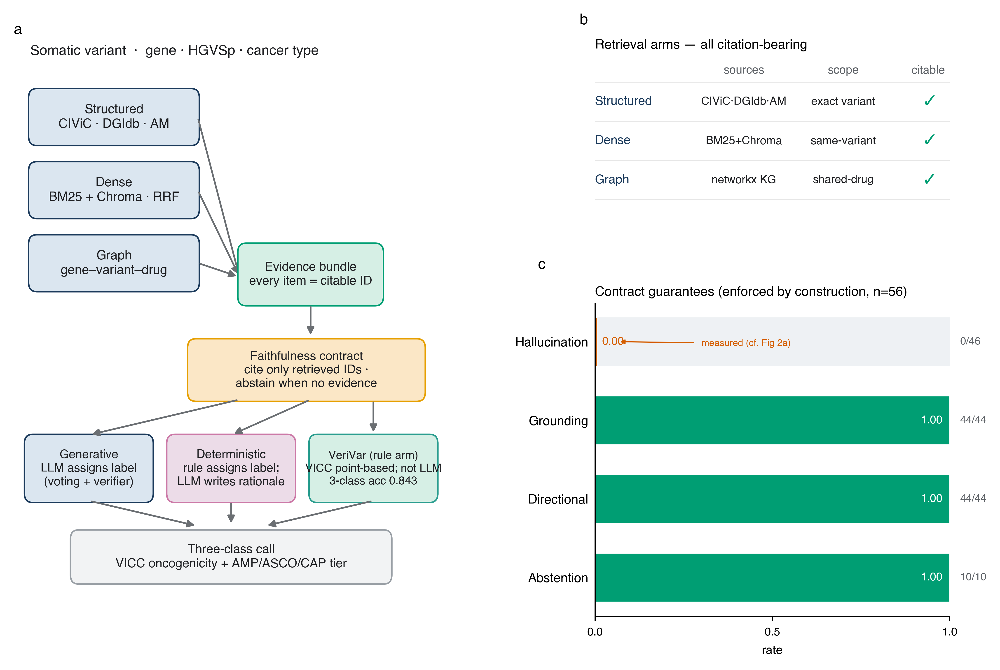
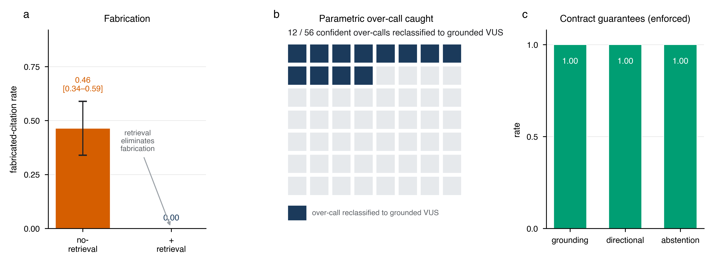
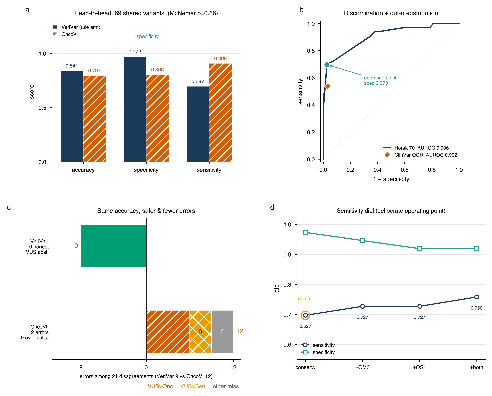
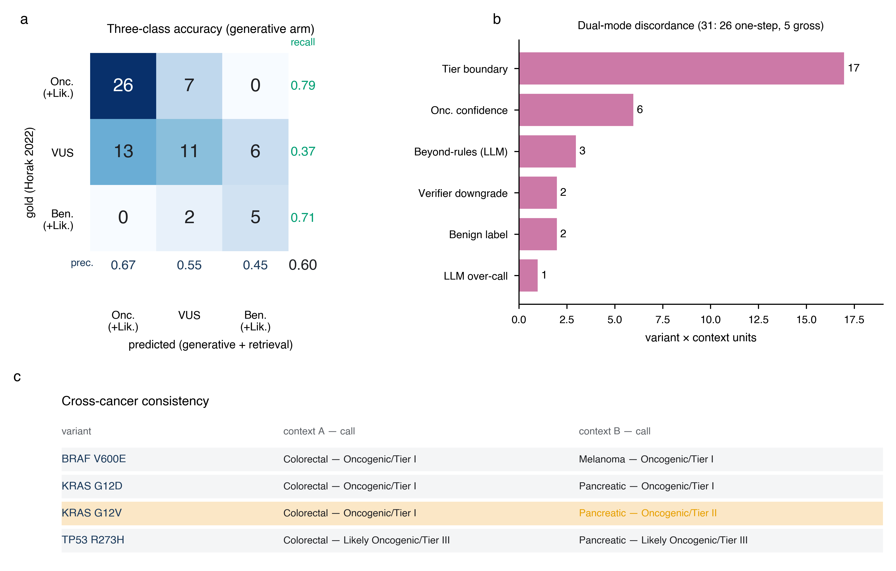
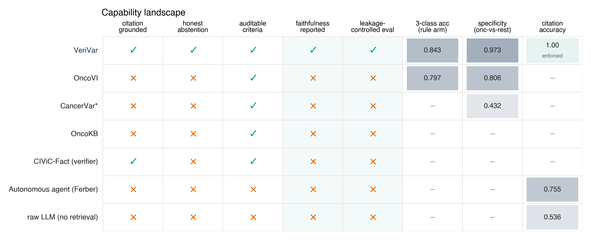
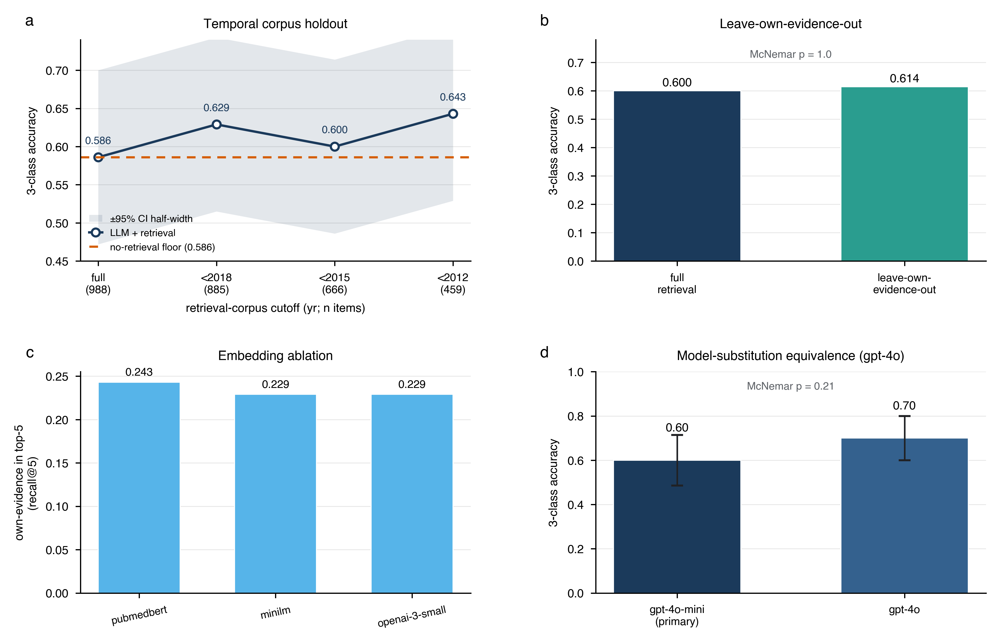
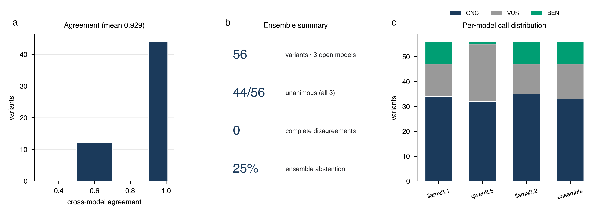
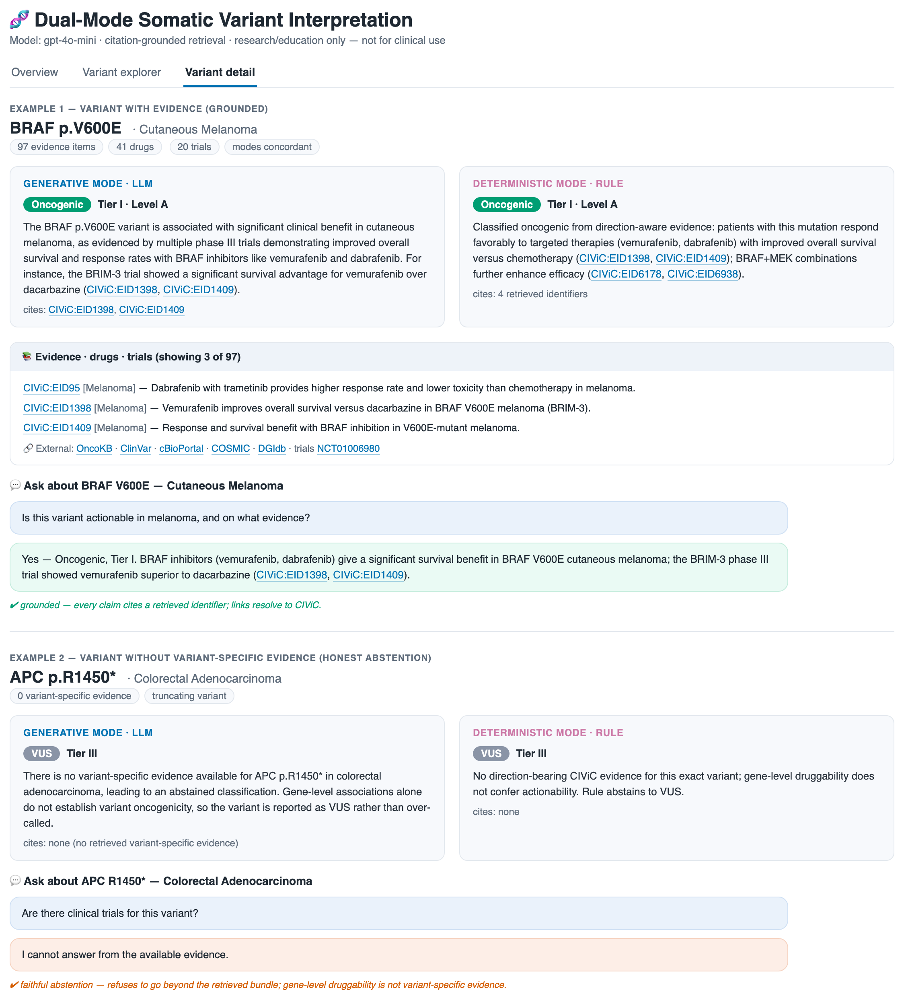
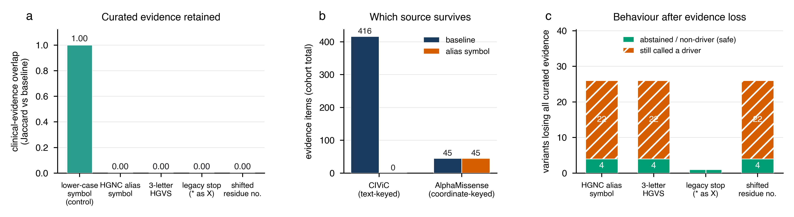

(Citation-grounded retrieval for faithful LLM somatic variant interpretation)
저자: Ka-Kyung Kim (김가경)
소속: [확인 필요 — 회사/IP 검토 후 확정]
교신: kakyung.kim@gmail.com
목적(Objective). 체세포 변이 해석은 환자 대면 종양학 보고서로 이어지며, 각 oncogenicity 및 AMP/ASCO/CAP tier 판정은 표적 치료를 지시하거나 보류한다. 따라서 근거 인용을 조작하거나 변이를 자신만만하게 과대 판정하는 대규모 언어모델(large language models, LLM)은 그 판정이 우연히 옳더라도 임상적으로 사용할 수 없다. 사용 가능한 의사결정 지원 초안은 한 줄 한 줄 감사 가능(auditable)해야 하며, 조작하기보다 판단을 보류(abstain)해야 한다. 그러나 LLM은 정확히 이와 반대되는, 임상 활용을 가로막는 두 가지 실패 양상을 보인다. 근거 인용을 조작(fabricate)하며, 감사 가능한 근거가 아니라 잘 알려진 변이에 대한 파라메트릭 기억(parametric memory)에 의존한다는 점이다. 본 연구는 검색 정초(retrieval grounding)가 LLM 해석을 충실하고 감사 가능하게 만들 수 있는지, 그리고 정확도 효과가 실재하는지 아니면 누출(leakage) 산물인지를 물었다.
방법(Materials and Methods). 두 국제 표준 — ClinGen/CGC/VICC oncogenicity와 AMP/ASCO/CAP 임상 tier — 위에서 변이를 분류하는 이중 모드 체세포 변이 해석기를 구축하였다. 시스템은 하이브리드 인용 근거 기반 검색(구조화된 지식베이스, CIViC 근거 진술에 대한 밀집 검색(dense retrieval), 지식 그래프)을 사용하며, 모든 주장이 검색된 식별자를 인용하고 변이 특이적 근거가 없을 때 판단을 보류(abstain, VUS 지정)하도록 요구하는 충실성 계약(faithfulness contract) 하에 작동한다. 생성(Generative) 모드(LLM이 라벨을 부여)를 결정론적(Deterministic) 모드(방향성 인식 규칙이 라벨을 부여하고 LLM은 설명만 작성)와, 그리고 무검색 기준선과 비교하였다. 56개 변이, 5개 암종 TCGA 코호트와 외부의 균형 잡힌 70개 변이 전문가 골드 스탠다드(Horak et al. 2022)에서, 누출 없는 충실성 지표, 누출 통제(시간적 홀드아웃, 자기 근거 제외, 두 번째 모델, 임베딩 제거 실험), 부트스트랩 신뢰구간, 정확(exact) McNemar 검정으로 평가하였다.
결과(Results). 경험적 충실성 발견은 게이트 적용 전 검색 거동이다: 근거 번들이 채워진 상태에서 LLM은 56개 변이에서 106개 인용을 생성했고 그 중 번들에 없는 항목은 0개였다(조작 인용 없음). 반면 동일한 무검색 조건은 56개 중 26개 변이에서 인용을 조작했다(0.464, 95% CI 0.339–0.589, 0을 배제하는 신뢰구간). 정직한 측정 잔차는 인용 부정확이다: 검색 조건 106개 인용 중 20개(18.9%)가 정확한 변이 수준 식별자 대신 출처 카테고리명만 기재했다(번들 부재가 아니므로 조작이 아님). 이후 충실성 게이트가 계약을 끝단까지 강제하므로, 게이트 적용 후 스코어카드 — 환각 0, 인용 근거화 1.0, 방향성 충실성 1.0, 보류 재현율 1.0 — 는 계약이 구조적으로 보장하는 보장값이지 측정된 발현 결과가 아니다. 검색은 자신만만하게 과대 판정된 56개 중 12개(21.4%) 변이를 근거 정초 VUS로 재분류했다(정답이 아니라 행동 변화). 두 해석 축의 정확도 양상은 다르다. 생성 arm에서 3분류 정확도는 두 기준선과 유의하게 다르지 않았다(검색 0.600, 무검색 0.586, 단순화 규칙 0.557; McNemar p = 1.0 및 0.61, 겹치는 CI). 따라서 기여는 정확도가 아니라 충실성이다. 별도로, VeriVar의 규칙 arm — 인용 가능한 VICC 점수 기반 구현체이자 LLM이 아닌 결정론적 규칙 엔진이며 새로운 분류기로 주장하지 않음 — 은 Horak-70에서 3분류 정확도 0.843(95% CI 0.757–0.929; 특이도 0.973, AUROC 0.906)에 도달했고, 69개 공유 변이에서 오픈소스 ClinGen/CGC/VICC 가이드라인 엔진 OncoVI와 정면 비교 시 정확도가 통계적으로 구별 불가능했으며(0.841, 95% CI 0.754–0.928 대 0.797, 95% CI 0.696–0.884; McNemar p = 0.66) 특이도(0.972 대 0.806)와 오류 양상에서 우위를 보였다(정직한 VUS 보류 9건 대 OncoVI 과대 판정 9건); 두 정면 비교 값은 모두 69개 공유 변이 기준이다(OncoVI의 공개 전체 93개 세트 정확도는 0.80). 시간적 홀드아웃, 자기 근거 제외, 모델 교체, 임베딩 통제는 생성 arm 정확도를 통계적으로 변화시키지 않아, 충실성 거동과 생성 정확도 효과의 부재가 모두 검색 코퍼스 누출의 산물이 아님을 보인다; 다만 이 통제들은 모델 자체의 파라메트릭 채널을 다루지 않으며, 이 채널은 여전히 통제되지 않고 무검색 하한으로만 정량화된다. 변이의 표기만 교란한 추가 제거 실험은 계약의 실제 한계를 드러낸다. HGNC 별칭 심볼 시험 66회 전부와 세 글자 HGVS 표기 전부가 해당 변이의 큐레이션 임상 근거를 모두 걷어냈고(코호트 전체 416건이 0건), 그럼에도 영향을 받은 26개 변이 중 22개가 좌표 기반 계산 사전 확률 하나만으로 여전히 Oncogenic 또는 Likely Oncogenic으로 판정되었다. 이 제거 실험에서 조작된 인용은 없었으므로(228건 중 0건), 계약은 문언대로는 지켜지면서 임상적으로 중요한 것, 곧 driver 판정이 큐레이션 임상 근거 위에 서 있다는 것은 보장하지 못한다.
고찰(Discussion). 검색 정초는 생성 해석기를 충실하고 감사 가능하게 만들며 자신만만한 파라메트릭 과대 판정을 억제하지만, 이 규모에서는 그 arm의 정확도를 향상시키지 않는다; 별도의 결정론적 VICC 규칙 arm은 동일한 감사 가능 틀 안에서 오픈 최첨단 엔진과 구별 불가능한 정확도를 훨씬 높은 특이도로 달성한다.
결론(Conclusion). 신뢰할 수 있는 임상 의사결정 지원의 전제 조건인 충실성과 감사가능성은 구조적으로 보장될 수 있다. 정확도 이득을 확립하려면 더 크고 검정력 있으며 누출 통제된 전문가 판정 벤치마크가 필요하며, 본 연구는 그 설계를 제시한다. 본 연구는 인용 충실성, 감사가능성, 분류 정확도만을 측정하며; 임상적 유용성은 동기일 뿐 측정되지 않았고(환자 결과 없음, 전향적 사용 없음), 시스템은 임상 진료가 아니라 연구·교육용이다.
키워드: 체세포 변이 해석; 대규모 언어모델; 검색 증강 생성; 충실성; 감사가능성; 임상 의사결정 지원; 정밀 종양학.
체세포 변이 해석 — 종양 변이가 oncogenic하고 임상적으로 실행 가능(actionable)한지 판단하는 일 — 은 정밀 종양학의 율속 단계다. 분자종양위원회(molecular tumour board)에서 병리의사는 각 변이에 대해 oncogenicity 판정과 AMP/ASCO/CAP 임상 tier 초안을 작성하며, 이러한 각 분류는 표적 치료와 임상시험 등록을 지시하거나 보류한다. 그 초안은 바로 개별 주장 수준에서 결정적이다: 환각된 근거 — 자신만만한 판정 아래의 그럴듯하지만 존재하지 않는 인용 — 는 임상의로 하여금 존재하지 않는 근거에 따라 행동하게 만들고, benign 변이의 조용한 과대 판정은 부적절한 표적 치료를 촉발할 수 있으므로, 임상 보고서에 들어가는 모든 주장은 감사·책임·규제 검토를 위해 1차 출처로 추적 가능해야 한다. 이 과제는 인력 병목이기도 하다. 전문가 큐레이션은 일상적 종양 시퀀싱의 변이 물량을 따라가지 못하며, 도움이 가장 필요한 희귀하거나 큐레이션이 부족한 변이가 판정이 가장 느리고 불확실하다. 따라서 자동화된 보조 도구는 직접적 임상 가치를 가질 수 있으나, 그 초안이 한 줄 한 줄 신뢰될 수 있을 때에만 그러하다: 감사 가능해야 하고, 불확실성을 조작해 없애기보다 그것을 선언해야 한다.
두 커뮤니티 표준이 이 과제를 구조화한다. ClinGen/CGC/VICC 프레임워크는 oncogenicity를 다섯 라벨 점수 기반 시스템(Oncogenic, Likely Oncogenic, VUS, Likely Benign, Benign)으로 정의하고 [1], AMP/ASCO/CAP 프레임워크는 임상 tier(Tier I–IV, 근거 수준 A–D)를 정의한다 [2]. 어느 표준이든 적용하려면 이질적 근거 — 큐레이션된 임상 주장, 약물–유전자 상호작용, 계산적 병원성 예측, 임상시험 현황 — 를 변호 가능하고 인용 가능한 판단으로 종합해야 한다.
이미 성숙한 생태계가 이 표준들을 운용한다. OncoKB [3], COSMIC [4], 크라우드소싱 CIViC [5] 같은 전문가 큐레이션 지식베이스는 변이 및 유전자 수준 임상 주장을 제공하며, CancerVar [6], Cancer Genome Interpreter [7], Personal Cancer Genome Reporter [8] 같은 규칙·모델 기반 플랫폼은 변이를 tier와 oncogenicity 판정에 매핑한다. 이 시스템들은 정확하고 감사 가능하지만 손으로 구축한 규칙 엔진과 사전 계산된 조회에 의존한다. 즉 자유 텍스트 근거를 즉석에서 읽지도, 자연어 정당화를 생성하지도 않으며, 희귀하거나 큐레이션이 부족한 변이 커버리지는 기반 데이터베이스에 의해 제한된다. 본 연구는 이 선행 연구를 우리 시스템이 양립해야 할 기존 기술로 취급하며 — 우리의 결정론적 모드는 같은 전통을 의도적으로 단순화하여 방향성을 인식하도록(direction-aware) 재구현한 것이다 — 우리가 능가한다고 주장하는 기준선으로 보지 않는다. 직교적으로, 계산적 변이 효과 예측기 AlphaMissense [9], 단백질 언어모델 ESM1b [10], 진화 모델 EVE [11] 는 유전체 규모의 병원성 사전 확률을 제공한다. 본 연구는 AlphaMissense를 하나의 근거 축으로 사용하되, 이러한 점수를 그 자체로는 임상적 실행 가능성을 확립할 수 없는 유전자 비특이적 사전 확률로 취급한다.
LLM은 자유 텍스트를 유창하게 읽고 구조화된 산문을 생성하므로 이러한 종합에 매력적이다. 그러나 두 실패 양상이 감사 가능한 임상 환경에서 순진한 사용을 안전하지 않게 만든다. 첫째, 인용 환각(hallucinated citations): 분류 정당화를 요청받은 LLM은 그럴듯하지만 존재하지 않는 PMID나 데이터베이스 식별자를 거리낌 없이 생성한다. 임상 보고서에서 조작된 참고문헌은 환자 안전 및 법적 위해 요인인데, 그것이 뒷받침하는 듯한 주장을 확인할 수 없기 때문이다. 둘째, 파라메트릭 누출(parametric leakage): 유명한 driver 변이(예: BRAF V600E, KRAS G12D)가 사전학습 데이터에 과다 표현되어 있어, LLM은 제공된 근거가 아니라 기억에서 교과서적 답을 재현할 수 있다. 이는 잘 알려진 변이의 외견상 정확도를 부풀리는 동시에, 표면적으로 유사하지만 기능적으로 benign한 변이에 자신만만한 과대 판정을 낳으며 — 실제로 benign 변이를 oncogenic으로 과대 판정하면 부적절한 표적 치료를 촉발할 수 있다.
검색 증강 생성(retrieval-augmented generation, RAG)은 자연스러운 완화책이다. 모델을 검색된 근거에 정초시키고 그 근거를 인용하도록 요구하는 것이다. 두 실패 양상 모두 유전체학 밖에서 잘 기록되어 있다. Gao et al. [12]의 ALCE 벤치마크는 인용 정밀도·재현율의 자동 평가를 정형화하고 강력한 LLM조차 자신의 주장을 빈번히 뒷받침하지 못함을 보였으며, Xiong et al. [13]의 MedRAG/MIRAGE 연구는 의학 질의응답에서 환각과 오래된 지식의 부분적 완화책으로 검색을 확립했다. 임상 유전체학 영역에서도 최근 연구가 LLM과 검색을 변이 해석에 적용하기 시작했다. Lin et al. [14]은 암 변이 분류에서 GPT-4o, Llama 3.1, Qwen 2.5를 벤치마킹하여 변이를 더 높은 근거 수준으로 과대 분류하는 체계적 경향 — 우리가 관찰한 것과 동일한 파라메트릭 과대 판정 — 을 보고하면서 검색과 프롬프트 엔지니어링이 도움이 되었음을 언급했고, Lu와 Cosgun [15]은 약 1억 9천만 개 변이 주석을 RAG와 미세조정으로 GPT-4o에 통합하여 높은 필드 수준 주석 정확도를 보고했다. 그러나 이 연구들은 전문가 라벨 대비 정확도를 강조하면서 두 질문을 충분히 검토하지 않았다. 첫째, 시스템이 실제로 충실한가 — 검색된 근거만 인용하고 근거가 없을 때 정직하게 보류하는가 — 그리고 일반 도메인 귀속 벤치마크 [12]가 하듯 외부 정답 키 없이 충실성을 측정할 수 있는가(유전체학 RAG 연구 [14,15]는 하지 않는다)? 둘째, 외견상의 정확도 이득이 실재하는가 아니면 누출 산물인가 — 시스템이 최근의 정답 진술 근거를 검색하여(코퍼스 누출) 또는 파라메트릭 회상으로(모델 누출) 성공하는가, 아니면 진정한 근거 정초 추론으로 성공하는가? 우리가 아는 한, 어떤 선행 변이 해석 연구도 누출 통제(시간적 홀드아웃 및 자기 근거 제외)된 정확도 평가를 누출 없는 충실성 감사와 함께 보고하지 않았으며, 이것이 본 연구가 겨냥하는 공백이다.
본 연구는 응용 시스템과, 더 중심적으로는 헤드라인 정확도가 아니라 충실성과 누출을 중심에 둔 엄밀한 평가로 그 공백을 다룬다. 우리는 의도적인 통계적 절제를 가지고 세 주장을 제시한다. 첫째, 시스템은 구조적으로 그리고 경험적으로 충실하다 — 인용 조작 0건, 완전한 근거화·보류로, 동일한 무검색 LLM이 갖지 못하는 속성이며 그 격차는 크고 통계적으로 견고하다. 둘째, 검색은 자신만만한 파라메트릭 과대 판정을 억제한다 — 변이 특이적 근거를 읽음으로써 과대 판정된 여러 변이를 VUS로 재분류한다(각 재분류의 정답 여부는 전문가 판정을 기다린다). 셋째, 균형 잡힌 전문가 골드 스탠다드에서 생성 arm의 정확도는 무검색 LLM 및 단순화 규칙과 유의하게 다르지 않다(n = 70에서 차이의 부재에 대한 증거이지 동등성의 증거는 아니다); n = 70에서 차이가 유의하지 않으므로 우리는 정확도 이득을 주장하지 않으며, 사전 지정된 비열등성 마진이 없으므로 이를 정식 비열등성 검정이 아니라 겹치는 CI와 비유의 McNemar 검정으로 보고한다. 별도로, 인용 가능한 VICC 점수 기반 규칙 arm — LLM이 아닌 결정론적 규칙 엔진 — 은 동일한 감사 가능 틀 안에서 오픈 최첨단과 구별 불가능한 정확도를 더 높은 특이도로 달성하여, 이 접근이 충실성을 위해 정확도를 희생할 필요가 없음을 보인다. 이어서 이 거동을 여러 누출 통제에 부쳐 그것이 단일 구성의 산물이 아니라 견고함을 보인다. 본 연구의 기여는 새로운 모델링 방법이나 기존 해석 플랫폼에 대한 정확도 향상이 아니라 응용적이고 평가적이다 — 구조적으로 충실한 시스템과 누출을 고려한 충실성/정확도 평가다.
그림 1은 우리가 VeriVar라 부르는 시스템을 요약한다. 하이브리드 검색 계층이 인용 가능한 근거 번들을 구성하여 충실성 계약 하의 두 해석 모드에 공급하고, 그 결과는 의사결정 지원 인터페이스로 표출된다.

그림 1. 시스템 개요와 인용 근거화. (a) 각 변이는 하이브리드 인용 근거 기반 검색 계층(구조화·밀집·그래프 축)을 거쳐 모든 항목이 인용 가능한 식별자를 지닌 근거 번들로 변환되고, 충실성 계약이 모든 주장이 검색된 식별자만 인용하고 변이 특이적 근거가 없을 때 보류(VUS)하도록 요구한다. 세 해석 축이 이어진다 — 생성(Generative) 모드(LLM이 자기일관성 투표와 에이전트형 검증기로 라벨 부여), 결정론적(Deterministic) 모드(방향성 인식 규칙이 라벨 부여, LLM은 근거 서술만), VeriVar의 규칙 arm(인용 가능한 VICC 점수 기반 구현체; 이 arm에 표시된 3분류 정확도 0.843은 LLM이 아니라 OncoVI와 비교 벤치마크된 결정론적 규칙 값이다; 3.3절, 그림 3a). (b) 세 검색 축은 모두 인용 가능하다. (c) 56개 변이 코호트의 계약 보장값(구조적으로 강제됨): 환각 0, 근거화 1.0, 방향성 충실성 1.0, 보류 재현율 1.0. 1.0 값들은 게이트가 강제하는 보장값이지 측정된 발현 결과가 아니다; 측정된 반증 가능한 발견은 0.00 환각 막대다(검색 없으면 46.4%, 패널 2a).
변이는 각각 통제된 열거형(enumeration)으로 강제된 두 축에서 분류되었다. Oncogenicity는 다섯 라벨(Oncogenic, Likely Oncogenic, VUS, Likely Benign, Benign)을 갖는 ClinGen/CGC/VICC 2022 점수 기반 표준을 따랐다. 임상 tier는 AMP/ASCO/CAP 2017 표준(Tier I–IV, Tier I/II에 근거 수준 A–D)을 따랐다. ACMG/AMP 2015 생식세포 프레임워크는 과제가 체세포이므로 의도적으로 사용하지 않았다. 두 어휘를 enum으로 통일함으로써 생성 모드와 결정론적 모드를 동일한 라벨 공간에서 비교할 수 있었다.
코호트(입력 변이). 환자 변이는 cBioPortal REST API(TCGA PanCancer Atlas, 공개)에서 서사적 대비를 위해 선택된 다섯 암종 — 폐선암(NSCLC), 유방암, 대장암, 피부 흑색종, 췌장암 — 에 걸쳐 각 7개 샘플(35개 샘플)로 추출되었다. 선택은 27개 유전자 driver 패널로 제한되고 결정론적이었으며, BRAF V600E 같은 쇼케이스 변이가 흑색종과 대장암 샘플 모두에 등장하도록 보장하여 맥락 의존성 분석을 가능케 했다. (유전자, 단백질 변화, 암종)으로 중복 제거하고 단계적으로 선택한 후 56개 변이×맥락 단위가 분류되었다(398개 고유 후보 중).
지식 출처(근거 계층). 오프라인 스냅샷은 CIViC(1,714개 패널 근거 행; CC0), DGIdb(27개 유전자에 걸친 2,608개 유전자–약물 상호작용), Ensembl VEP REST를 통한 AlphaMissense(352개 missense SNV에 대한 계산적 병원성, VICC 계산 코드로 매핑), ClinicalTrials.gov v2(37개 임상시험)로부터 구성되었다. CIViC 근거 진술은 검색을 위해 영속적 밀집 인덱스에 임베딩되었다.
데이터 자원, 버전, 유전체 빌드. 모든 상류(upstream) 자원과 그 스냅샷/버전 및 좌표 출처는 표 M0에 정리한다(커밋된 자원 매니페스트 docs/RESOURCES.md / data/knowledge/resources.json로부터 작성; 공식 상류 버전이 공개되지 않은 경우 접근 일자가 기록된 스냅샷으로 표기). 주 유전체 빌드는 GRCh37(hg19) 이다 — TCGA 코호트 좌표, 코호트에 대한 AlphaMissense 변이별 좌표 조회, 그리고 본 파이프라인에서 사용한 Horak 좌표가 모두 GRCh37이다. AlphaMissense는 빌드 인식형이며 단백질 수준(점수가 단백질 변화로 색인되고 liftover가 없음)이므로, 빌드는 단백질 변화로 색인되는 근거에 영향을 주지 않는다. CancerVar 예측은 교차 축(cross-axis) 비교자로서 GRCh38(hg38, Horak b38 좌표) 상에서 별도로 획득하였다(§2.5).
표 M0. 데이터 자원, 버전, 유전체 빌드.
| 자원 | 버전/스냅샷 | 유전체 빌드 | 출처 | 접근 일자 | 라이선스/비고 |
|---|---|---|---|---|---|
| TCGA PanCancer Atlas 2018 코호트(cBioPortal 경유) | cBioPortal 스냅샷(5개 study, study당 7개 샘플) | GRCh37 (hg19) | cBioPortal REST API | 2026-05-30 | TCGA open-access 체세포 변이; 27-유전자 driver 패널 |
| CIViC(임상 근거 + assertion) | nightly 스냅샷 2026-05-30 | n/a(유전자/변이 수준) | civicdb.org nightly TSV | 2026-05-30 | CC0 1.0; 근거 1,714행; assertion 35개 |
| DGIdb(약물–유전자 상호작용) | API 스냅샷 2026-05-30 | n/a(유전자 수준) | dgidb.org GraphQL API | 2026-05-30 | 2,608개 유전자 수준 상호작용; 변이 특이적 근거 아님 |
| AlphaMissense(계산적 병원성) | model 2023(Cheng et al., Science 2023; Zenodo 8208688), Ensembl VEP REST 경유 | 빌드 인식형, 단백질 수준(liftover 없음) | Ensembl VEP REST (AlphaMissense=1) | 2026-05-30 | 352개 missense SNV; 임계값 pathogenic≥0.564, benign≤0.34; CC-BY-NC |
| ClinicalTrials.gov | REST API v2 스냅샷 | n/a | clinicaltrials.gov API v2 | 2026-05-30 | CIViC NCT id로 연결된 37개 임상시험 |
| UniProt 단백질 도메인 | 스냅샷(상류 버전 미기록) | n/a(단백질/UniProt 잔기 번호) | rest.uniprot.org | snapshot | CC-BY 4.0; 9개 유전자 도메인 스팬 |
| Horak et al. 2022(외부 골드 스탠다드) | 70개 전문가 분류 변이(ClinGen/CGC/VICC) | GRCh37(b37) + GRCh38(b38) 모두 커밋 | PMC9081216 | snapshot | Genet Med 2022;24(5):986–998; VICC 점수 기반 oncogenicity 표준 |
| CancerVar(교차 축 AMP/ASCO/CAP 비교자) | 웹서버 스냅샷 2026-06-14(hg38_update) | GRCh38(hg38; Horak b38 좌표) | cancervar.wglab.org | 2026-06-14 | Li et al., Sci Adv 2022;8(18):eabj1624; tier 원문 그대로 파싱 |
| Ensembl VEP REST 미러 | REST 엔드포인트(변이별 스냅샷, 로컬 캐시) | GRCh37(grch37.rest.ensembl.org) · GRCh38(rest.ensembl.org) | rest.ensembl.org | 2026-05-30 | VCF 주석 + AlphaMissense 조회; 오프라인 재현용 캐시 |
| LLM — gpt-4o-mini(주) + gpt-4o(교체 시험) | gpt-4o-mini(주); gpt-4o 모델 교체 동등성 시험 | n/a | api.openai.com | 2026-05-30 | self-consistency n=3 + agentic verifier; 키 미설정 시 오프라인 mock fallback |
외부 벤치마크(정답). 외부 골드 스탠다드는 ClinGen/CGC/VICC oncogenicity 표준화 논문인 Horak et al. (2022)의 Supplemental Table 3 — 9개 유전자(FLT3, BRAF, IDH1, KRAS, PIK3CA, PTEN, RB1, EZH2, TP53)에 걸친 70개 전문가 분류 체세포 변이 — 였다. 결정적으로 라벨 분포가 균형(VUS 30, Likely Oncogenic 19, Oncogenic 14, Benign 5, Likely Benign 2)되어 있어, 단일 클래스로 심하게 치우친 CIViC 임상 주장과 달리 변별력 있는 벤치마크가 된다. Horak 라벨은 재분배되지 않았고 파생 지표만 보고된다.
각 변이에 대해 세 축에서 근거 번들이 구성되었으며, 모든 항목은 인용 가능한 식별자를 지녔다. 구조화 축은 CIViC에서 유전자 + 단백질 변화의 정확 조회, DGIdb에서 유전자 수준 약물 조회, 유전체 좌표에 의한 AlphaMissense 조회(VICC 계산 코드 산출)를 수행했다. 밀집(dense) 축은 CIViC 진술에 대해 도메인 임베딩(기본값 NeuML/PubMedBERT; 제거 실험으로 OpenAI text-embedding-3-small)을 사용하고, BM25와 Chroma 검색을 상호 순위 융합(Reciprocal Rank Fusion)으로 융합했으며, 동일 유전자 주제 표류를 방지하기 위해 동일 변이 적중만 부착했다. 그래프 축은 networkx 지식 그래프(유전자·변이·질환·약물·임상시험)를 사용해 공유 약물을 통해 관련 변이를 드러냈다. 출력을 지배한 충실성 계약은 다음과 같다: 분류는 검색된 식별자만 인용할 수 있고, 변이 특이적 근거가 없을 때 시스템은 보류(VUS 지정)해야 했다(유전자 수준의 약물 적용 가능성은 변이 특이적 근거로 인정되지 않았다).
두 모드는 유연성과 재현성 사이의 의도적 절충을 구현하며, 시스템은 모든 변이에 대해 둘을 함께 실행한다. 생성(Generative) 모드는 LLM이 직접 라벨을 결정하게 한다: 언어모델은 어떤 고정 규칙도 열거하지 못하는 자유 텍스트 근거를 읽고 가중할 수 있으므로, 이 모드는 탐색적 해석과 희귀하거나 큐레이션이 부족한 변이에 적합하나 실행 간 변동성과 과대 판정 경향을 대가로 한다. 반면 결정론적(Deterministic) 모드는 투명하고 방향성을 인식하는 규칙으로 라벨을 고정하고 LLM을 사람이 읽을 수 있는 근거 서술 작성으로만 강등한다; 이는 재현성과 감사가능성 — 매 실행마다 동일한 출력, 큐레이션된 규칙 엔진의 전통 — 을 사면서도 유창한 자연어 정당화를 얻고, 모델의 파라메트릭 사전 확률이 근거를 압도하지 못하게 한다. 동일한 변이에 둘을 모두 실행하는 것 자체가 유의미하다: 유연한 독해자와 고정된 규칙이 불일치하는 지점이 진정한 해석적 불확실성을 국소화하므로(3.5절), 불일치는 결함이 아니라 신호로 취급된다.
생성(Generative) 모드. LLM(gpt-4o-mini)이 enum 어휘로 제한되고 근거 번들에 정초된 상태로 oncogenicity와 tier 라벨을 직접 부여했다. 자기일관성 투표(n = 3; 합의를 신뢰도 점수로 매핑)와 에이전트형 검증기(과대 주장을 하향 판정하는 적대적 2차 통과로, 보류 시 건너뜀)로 강화되었다. 결정론적(Deterministic) 모드. 방향성 인식 규칙이 CIViC 유의성과 방향으로부터 라벨을 부여했다(따라서 “Unaltered Function” 또는 “Does Not Support” 근거는 oncogenicity에 반하여 계산되고, Sensitivity/Response 근거만 실행 가능성을 부여한다); 여기서 LLM은 자연어 근거 서술만 작성했다. 무검색 기준선은 근거 번들을 제거한 생성 모드 프롬프트를 실행하여 파라메트릭 거동을 분리했다.
우리는 gpt-4o-mini를 의도적으로 주모델로 사용했다: 본 연구의 기여는 특정 모델이 아니라 검색·충실성 아키텍처이며, 저렴한 모델은 코호트 규모의 이중 모드 실행과 제거 실험을 감당 가능하게 만들고 보수적인 능력 하한을 설정한다 — 약한 모델에서 입증된 속성은 더 강한 모델에서도 성립할 가능성이 높다. 온도 0은 결정성과 재현성을 위해 사용했으며, 투표에 필요한 답의 다양성을 유도하기 위해 자기일관성 투표 통과에만 0.4를 사용했다. 발견이 모델 크기의 산물이 아님을 확인하기 위해 더 강한 gpt-4o로 외부 벤치마크를 복제했고(3.4절, 표 1), 다른 독점 또는 공개 모델을 광범위하게 스윕하지는 않았으며 이를 한계로 명시한다.
세 부류의 평가가 수행되었다. 누출 없는 충실성 지표는 외부 정답을 필요로 하지 않았다: 환각 인용률(생성된 인용이 검색 번들에 없는 변이의 비율), 인용 근거화, 방향성 충실성(부여된 라벨이 인용 근거의 방향을 존중하는가), 보류 재현율(근거 없는 변이 중 올바르게 보류된 비율), 모드 간 Cohen’s κ. 제거 실험(ablation)은 결정론적 모드, 무검색 LLM, 검색을 갖춘 생성 모드를 비교했다. 외부 벤치마크는 Horak 골드 스탠다드에 대해 5분류 및 축약 3분류 정확도와 κ를 계산했다. 누출 통제는 시간적 분할(검색 코퍼스를 컷오프 연도 이전 문헌으로 제한), 자기 근거 제외(leave-own-evidence-out, LOVO) 제거 실험(검색 전에 각 변이 자체의 큐레이션 CIViC 근거 제거), 두 번째 모델 복제(gpt-4o), 임베딩 제거 실험(PubMedBERT 대 MiniLM 대 OpenAI, 보류된 자기 근거의 recall@5로 채점)으로 구성되었다. 여덟 가지 추가 코호트 분석(암종 간 일관성, 민감성/내성, 밀집 검색 회수 향상, AlphaMissense–LLM 일치, 보정, 불일치 집중, hotspot 대 희귀, 검증기 순효과)이 거동을 특성화했다.
불확실성은 정확도와 일치도에 대한 비모수 부트스트랩 95% 신뢰구간으로 정량화되었고, 쌍을 이룬 방법들은 변이별 정확성에 대한 정확 McNemar 검정으로 비교되었다; 보고된 모든 p값은 양측 검정이다. 구현은 파이프라인과 200개 단위 테스트로 구성되었으며, 시스템은 재현성을 위해 커밋된 스냅샷에서 오프라인으로 실행된다.
변이는 유전자 심볼과 단백질 변화의 짝으로 시스템에 들어오는데, 출처에 따라 표기가 제각각이다. 오래된 병리 보고서는 HGNC가 ERBB2라 부르는 것을 HER2로 적고, 어떤 주석 파이프라인은 p.V600E를 내는 자리에서 다른 파이프라인은 p.Val600Glu를 내며, HGVS 이전 도구는 지금의 p.R130*를 p.R130X로 쓴다. 같은 유전체 변화라도 다른 전사체를 기준으로 주석하면 잔기 번호가 달라진다. 앞의 셋은 같은 변이를 달리 적은 것이므로 해석이 달라져서는 안 되고, 넷째는 다른 잔기를 가리키므로 조용히 받아들여져서는 안 된다. 검색 계층의 모든 구조화 조회가 대문자화한 (심볼, 단백질 변화) 짝을 키로 쓰고 밀집 축은 검색된 문서의 유전자 심볼이 질의와 정확히 일치할 것을 추가로 요구하므로, 여기는 시스템이 조용히 실패할 수 있는 지점이다. 그래서 가정하지 않고 측정했다(scripts/run_context_ablation.py).
각 교란을 코호트 56개 변이의 입력에 적용하고 파이프라인을 다시 돌렸다. 별칭(alias)은 심볼을 HGNC 대체 심볼로 바꾸며, 우리가 고르지 않고 코호트 각 유전자의 HGNC REST 레코드에서 가져왔다(scripts/fetch_gene_aliases.py. 폐기된 이전 심볼을 먼저, 없으면 현행 별칭을 쓴다). 3문자 표기는 단백질 변화를 세 글자 HGVS로 다시 적는다. 구식 종결 표기는 넌센스 변이의 종결 기호를 X로 바꾼다. 잔기 번호 이동은 잔기 번호에 12를 더하는데, 이 arm은 실제 대체 전사체로 재주석한 것이 아니라 다른 전사체의 번호 체계를 흉내 낸 합성 교란임을 분명히 밝힌다. 잘못된 잔기 번호가 걸러지는지를 보는 것이지 그런 일이 얼마나 자주 생기는지를 재는 것이 아니다. 다섯째 arm은 유전자 심볼을 소문자로 바꾸는 음성 대조군이다. 조회 키가 대문자화되므로 이 arm은 아무 변화도 없어야 한다. 대조군이 나머지를 해석 가능하게 만드는데, 모든 arm이 무너진 결과만 놓고 보면 하네스가 고장 난 경우와 구별되지 않기 때문이다.
측정한 것은 두 가지다. 검색은 모델 비용 없이 결정론적으로 전수 조사했다. 모든 변이를 해당 유전자의 모든 HGNC 대체 심볼로 다시 검색해 검색된 근거 식별자의 Jaccard 중첩을 기준 대비로 채점했다. 이 스윕은 큐레이션 임상 근거(CIViC)만으로 채점하는데, AlphaMissense 주석기는 어떤 교란도 건드리지 않는 유전체 좌표를 키로 쓰므로 모든 arm에서 구조적으로 살아남기 때문이다. 이를 함께 세면 정작 중요한 손실이 가려진다. 이어서 arm마다 결정론적 교란 하나를 골라 생성 모드 온도 0 단일 통과로 분류를 돌렸다. 검색만으로는 답할 수 없는 질문, 곧 큐레이션 근거가 사라진 뒤 시스템이 기권하는지 아니면 파라메트릭 지식으로 되돌아가 driver를 단정하는지를 보기 위해서다. 안전 측면에서 갈리는 지점이 여기다. 용어 불일치가 정직한 기권으로 이어지면 재현율을 잃는 데 그치지만, 더는 검색되지도 않은 근거 위에서 자신만만한 oncogenic 판정을 내면 충실성 실패이고 훨씬 심각하다.
본 연구는 두 가지 상보적 지침에 비추어 보고한다. 시스템이 예측 모델이므로 모델 명세·표본 크기 정당화·하위집단 보고에 대해 TRIPOD-AI(AI 예측 모델의 투명한 보고)를 따르고; 외부 평가(Horak-70 및 ClinVar 홀드아웃)가 전문가 참조 표준 대비 정확도 연구이므로 변이 흐름·참조 표준 명세·불확정 결과 처리에 대해 STARD 진단 정확도 관점을 추가로 적용한다. 불확정 출력(VUS/보류)은 제외하지 않고 보고된 클래스로 취급한다 — 기권 우선 설계에 임상적으로 적절한 STARD “중간 결과” 처리 결정이다. 주 연구는 단일 실행이며 정확도 주장을 위한 검정력을 갖추지 않았다; 이 표본 크기 한계는 TRIPOD-AI의 기대대로 암시가 아니라 명시적으로 앞서 진술한다(고찰의 “정확도 주장을 위한 검정력 있는 평가를 향하여” 참조).
변이 흐름(STARD). 코호트 흐름: cBioPortal TCGA PanCancer Atlas에서 27개 유전자 driver 패널과 다섯 암종에 걸쳐 추출한 398개 고유 후보 변이 → (유전자, 단백질 변화, 암종) 중복 제거 및 단계적 선택(비용 통제를 위해 암종당 AlphaMissense 전용·근거 없는 변이 수 제한) 후 56개 변이×맥락 단위를 이중 모드로 분류. 외부 정확도 벤치마크는 Horak et al. 2022 Supplemental Table 3의 전문가 분류 변이 70개 전부(Horak-70 골드 스탠다드)를 사용했고; OncoVI(Carta et al. [19], 변이별 예측을 공개하는 완전한 ClinGen/CGC/VICC oncogenicity 가이드라인의 오픈소스 구현으로, 본 과제에서 가장 강한 오픈 결정론적 비교 대상으로 사용)와의 정면 비교는 OncoVI의 공개 예측과 공유되는 69개 변이로 제한했으며; 독립 일반화 세트는 458개 ClinVar 체세포 oncogenicity 기록으로 구성되었다. 외부 세트 진입 후 좌표·검색 가능 상태를 가진 변이는 제외되지 않았으며 Horak 라벨 분포는 재분배되지 않았다.
CancerVar 예측(교차 축 비교 대상). CancerVar의 AMP/ASCO/CAP tier 예측은 공식 CancerVar 웹 서버(cancervar.wglab.org; 엔드포인트 results_new.php)에서 Horak 70개 변이 전부에 대해, GRCh38 위치(chr/pos/ref/alt, 빌드 hg38_update, Horak 골드와 동일한 b38 좌표)로 cancer_types = All_types 조건으로 질의해 얻었다; tier는 반환된 결과 페이지에서 그대로 파싱했으며(임상적 유의성 필드 Tier_X와 기준 점수 합계) 따라서 어떤 tier도 우리 파이프라인이 계산하거나 부여하지 않았다(2026-06-14 UTC 취득; 변이별 원본 HTML 응답은 data/benchmark/cancervar/raw/에, 파싱된 예측은 cancervar_predictions.json에 출처 보존용으로 보관). CancerVar는 VICC oncogenicity가 아니라 임상 실행 가능성 tier를 보고하므로, 오직 VICC oncogenicity 골드에 채점하기 위해 Tier_I/II→Oncogenic, Tier_III→VUS, Tier_IV→Benign으로 매핑했다; 이 매핑은 교차 축 비교(3.6절)를 위한 보고상의 편의이며 어느 도구에도 유리하지 않다.
모델 카드(TRIPOD-AI). 분류 모델과 평가 구성을 표 M1에 요약한다.
표 M1. 모델 카드.
| 항목 | 명세 |
|---|---|
| 주모델 | gpt-4o-mini (OpenAI), langchain-openai 구조화 출력 |
| 교체 모델 | gpt-4o (모델 교체 동등성 시험, 3.4절) |
| 다모델 POC 평가자 | Llama 3.1 8B, Qwen 2.5 3B, Llama 3.2 3B (Ollama, 오프라인) |
| 온도 | 분류는 0(결정성); 자기일관성 투표 통과에만 0.4 |
| 자기일관성 투표 | n = 3 (합의를 신뢰도 점수로 매핑) |
| 에이전트형 검증기 | 적대적 2차 통과; on/off 제거 실험; 보류 시 건너뜀 |
| 출력 공간 | 강제 enum — VICC oncogenicity(5라벨)와 AMP/ASCO/CAP tier(I–IV) |
| 지식 스냅샷 | CIViC(1,714행, CC0); DGIdb(2,608 상호작용); AlphaMissense(352 missense SNV); ClinicalTrials.gov v2(37 임상시험); 오프라인, 커밋됨 |
| 임베딩(밀집 축) | NeuML/PubMedBERT(기본); OpenAI text-embedding-3-small(제거 실험) |
| 기록된 provenance | 시스템 프롬프트 5종의 실행별 해시, 샘플링 온도, 투표 수, 충실성 계약 버전, git 리비전 |
| 변경관리 | 12개 변이 골든 세트 회귀 스냅샷(scripts/run_golden_regression.py), 라이브로 생성; 구성 점검은 오프라인 실행 |
| 재현성 | 커밋된 스냅샷에서 오프라인 실행; 부트스트랩 시드 고정(0); 200개 단위 테스트 |
유전자별 정확도·보류 분해(보충 표 S1)는 커버리지가 얕은 하위집단(특히 EZH2, PTEN)을 드러내어 희귀 변이 약점을 감사 가능하게 한다.
충실한 해석을 의사결정 시점에 사용 가능하게 만들기 위해, 시스템은 브라우저 대시보드를 제공한다. 코호트 탐색기는 근거 상태, 약물 또는 임상시험 가용성, 모드 간 불일치로 변이를 필터링하고 필터링된 집합을 내보낸다. 변이별 보기는 생성 모드와 결정론적 모드의 판정을 나란히 보여주며, 인용된 각 항목은 1차 출처로 가는 클릭 가능한 링크로 렌더링된다 — CIViC 근거 항목, ClinicalTrials.gov 기록, 외부 지식베이스(OncoKB, ClinVar, cBioPortal, COSMIC, DGIdb). 근거 정초 질의응답 채팅은 충실성 계약을 자유 텍스트 상호작용으로 확장한다: 선택된 변이에 대한 질문에 그 변이의 검색 번들로부터만 답하고, 번들이 질문을 다루지 못할 때는 보류(“I cannot answer from the available evidence”)하며 유전자 수준의 약물 적용 가능성을 불충분한 것으로 취급한다(보충 그림 S3). 커밋된 코호트 외에도, 대시보드는 사용자가 제공한 VCF를 입력으로 받는다: 변이는 Ensembl VEP REST API를 통해 주석되고(유전체 빌드 자동 감지, GRCh37 또는 GRCh38) 동일한 이중 모드 해석과 충실성 계약을 거치며, 주석된 판정은 VEP 주석 표, 통합 해석 표, 또는 주석된 VCF로 내보낼 수 있다. 이 인터페이스는 연구·교육용 데모이며 검증된 임상 도구가 아니다.
호스팅형 모델 API 위에 올린 시스템은 스스로 통제하지 못하는 의존성을 안고 간다. 제공자가 동일한 모델 식별자 뒤의 모델을 바꿔도 응용은 그 변경도, 시점도 볼 수 없다. 공개 코드에는 이를 다루는 장치 두 가지가 들어 있고, 부수적 엔지니어링이 아니라 산출물의 재현성을 이루는 요소이므로 여기에 기술한다.
실행 provenance. 모든 출력은 모델 이름과 시각만이 아니라 모델의 거동을 실제로 고정하는 구성을 함께 기록한다. 생성 모드 분류, 무검색 기준선, 결정론적 모드 규칙 설명, 근거 정초 채팅, 적대적 검증기의 시스템 프롬프트 5종을 이름 붙은 상수로 두고 개별 해시와 전체 해시를 실행별 provenance에 남기며, 샘플링 온도와 자기일관성 표본 수, 적용 중인 충실성 계약 버전, 실행을 만든 트리의 짧은 git 리비전(커밋되지 않은 변경이 있으면 수정됨으로 표시)을 함께 담는다. 그 결과 프롬프트 수정이나 가드레일 변경이 소스 이력에만 남지 않고 출력에 드러나므로, 나중에 생긴 거동 차이를 추측하지 않고 귀속시킬 수 있다.
골든 세트 회귀. 변이 12개를 고정 기준 집합으로 못박았다(scripts/run_golden_regression.py). 본 연구가 기대는 거동을 고루 담도록 골랐다. 근거가 두터운 대표 판정 둘(흑색종의 BRAF V600E, 폐선암의 EGFR L858R), 같은 변이를 두 번째 종양형에서 채점해 맥락 의존성을 확인하는 BRAF V600E와 KRAS G12V, 밀집 검색이 결정적 근거를 공급하는 사례(PIK3CA H1047R), beyond-rules 불일치 3건(PIK3CA R88Q, PTEN R130*, ESR1 E247K), 변이 특이적 근거가 없는 보류 사례(APC R1450*), 불일치가 집중된 유전자(TP53 R175H), 계산 사전 확률만 있는 missense(ALK G1121D)다. 스냅샷은 변이마다 두 모드 각각에 대해 두 분류 축과 보류 플래그, 인용한 근거 식별자를 기록한다. 자유 텍스트 근거 서술은 분류가 바뀌지 않아도 달라져 신호가 아니라 잡음을 만들므로 비교에서 제외한다. 점검은 고정 집합을 의도적으로 결정론적인 구성(온도 0, 단일 통과, 자기일관성 투표 없음)으로 다시 실행하고, 차이가 나면 0이 아닌 코드로 종료하면서 그것을 설명할 구성 변화를 함께 출력한다.
무엇을 차이로 볼지는 분류기가 스스로를 재현하지 못한다는 사실을 감안해 정해야 한다. 아래 입력 맥락 제거 실험과 함께 보고한 재현성 측정에서, 동일한 프롬프트로도 비교 대상 필드의 쌍대 불일치가 17.3%였고 대부분이 인용 집합(10.1%)이었다. 고정 변이 12건을 저장된 단일 draw와 엄격 비교하면 움직임과 무관한 이유로 대부분의 실행에서 차이가 나며, 실제로 점검을 처음 돌렸을 때 그렇게 나왔다. 여기서 세 가지가 따라오고 모두 구현했다. 결정론적 규칙 모드는 코드이므로 엄격 비교를 유지했고, 거기서 움직이는 것은 실제 변화다. 생성 모드는 스냅샷을 만들 때 7회, 점검할 때 3회 뽑아 라벨을 다수결로 고정하고, 고정 라벨이 어느 draw에서든 나오면 재현된 것으로 본다. 인용은 생성 시 모든 draw에 공통으로 나온 식별자만 고정하고, 점검에서는 고정된 식별자가 적어도 한 draw에 다시 나오는지만 본다. 관측됐으나 고정되지 않은 식별자는 항목 옆에 기록하고 실패로 삼지 않는다. 커밋된 스냅샷에서는 변이 12개에 걸쳐 식별자 21개를 고정했고, 14개는 관측됐으나 고정할 만큼 안정적이지 않았다. 트리의 프롬프트·가드레일 해시를 스냅샷의 것과 대조하는 구성 전용 점검은 API 없이 오프라인 테스트에서 돌아간다. 커밋된 스냅샷은 gpt-4o-mini에 라이브로 변이당 7회씩 뽑아 생성했고, APC R1450*의 보류와 beyond-rules 불일치 3건을 포함해 아래에 보고한 정성적 거동을 재현한다. 다만 주 실행의 투표·검증기 구성이 아니라 결정론적 단일 통과 구성을 쓰므로 변이별 tier가 주 코호트 출력과 항목마다 일치할 것으로 기대하지는 않는다. 이 방식으로 다시 만들면서 샘플링으로 볼 수 없는 변화 하나도 함께 받아들였다. 췌장선암의 KRAS G12V는 2026년 8월 8일 오전에 뽑은 draw에서 Oncogenic, Tier I이었고, 같은 날 오후와 저녁에 뽑은 18회에서는 Likely Oncogenic, Tier II였다. 프롬프트 해시도 근거 번들 13건도 같았다. 코호트 56개 변이 가운데 오전 라벨이 오후 draw에 한 번도 다시 나오지 않은 것은 이 변이뿐이므로 모델 전반이 아니라 좁은 범위의 변화이며, 호스팅 모델이 움직였는지 서빙 구성이 움직였는지는 이 자료로 가릴 수 없다. 현재 스냅샷은 나중 거동을 고정하고 있다. 이는 결과가 아니라 재현성 산출물로 제시한다. AI 기반 소프트웨어의 변경관리 틀이 계획된 변경에 대해 사전에 확정한 수용 기준으로 검증할 것을 요구하는데 [23], 호스팅형 모델 위의 시스템이 피할 수 없는 그 한 가지 변경에 이를 적용한 운용 형태가 이 점검이다.
우리는 충실성 계약이 제공하는 두 가지를 구분한다: 게이트가 부과하지 않은 검색 arm의 경험적·반증 가능한 속성과, 구조적으로 성립하는 게이트 강제 보장이다. 경험적 결과부터 제시한다. 근거 번들이 채워진 상태에서 gpt-4o-mini는 56개 변이 코호트에서 106개 인용을 생성했고 그 중 번들에 없는 항목은 0개였다 — 즉 검색 arm은 게이트가 실행되기도 전에 근거를 조작하지 않았다(무검색 arm의 46.4% 조작률과 대비, 3.2절). 정직한 측정 잔차는 인용 부정확이다: 106개 중 20개(18.9%)가 특정 변이 수준 식별자 대신 출처 카테고리명(“AlphaMissense”)만 기재했다. 이것이 우리가 가진 가장 유의미한 충실성 수치인데, 모델이 부분적으로 틀렸고 게이트가 이후 교정한 유일한 거동이기 때문이다: 번들에 항목이 누락되지는 않았으나(조작 아님) 발화된 토큰이 검색된 식별자보다 덜 정밀했다.
그 게이트 적용 전 거동을 감안하면, 게이트 적용 후 스코어카드(그림 1c)는 모델이 발견한 발현 속성이 아니라 계약이 구조적으로 강제하는 보장값을 보고한다: 충실성 게이트가 정확한 식별자 매칭과 강제 보류를 부과하므로, 코호트 전반에서 환각 인용률은 0.0(인용을 생성한 46개 변이 중 0개), 인용 근거화는 1.0(44/44), 방향성 충실성은 1.0(44/44; 부여된 어떤 라벨도 인용 근거의 방향과 모순되지 않음), 보류 재현율은 1.0(근거 없는 변이 10/10이 올바르게 VUS로 보류됨)이다. 검색되지 않은 식별자를 발화하기를 거부하는 시스템은 정의상 조작 0, 근거화 1.0을 받는다; 따라서 이 수치는 계약이 무엇을 보장하는지에 관한 진술이며, 위의 18.9% 출처 카테고리 부정확(게이트의 정확 식별자 매칭으로 0%로 감소)이 대응하는 측정 잔차다. 추가로 근거를 지닌 2개 변이도 보수적으로 보류되었으며, 이 보수성은 고찰에서 논의하는 VUS 과대 재분류와 연결된다. 근거화 및 방향성 분모가 46이 아니라 44인 이유는, 인용을 생성한 46개 변이 중 2개가 확인 가능한 해석 가능한 검색 식별자가 없는 인용 불가능한 토큰만 생성했기 때문이다. 결정론적 모드에서는 분류에 LLM이 관여하지 않고 발화된 모든 코드가 사용된 오픈 근거 출처를 참조하므로 인용 충실성이 구조적으로 0%다.
생성 모드와 결정론적 모드 간 일치는 oncogenicity에서 상당했고(Cohen’s κ = 0.713) tier에서 중간이었으며(κ = 0.417), 이는 두 모드가 oncogenic/benign 축보다는 주로 tier 경계에서 차이를 보임과 일치한다.
검색을 제거하면 충실성이 단지 저하되는 데 그치지 않고 소멸되었다(그림 2). 동일한 무검색 LLM은 56개 변이 중 26개(46.4%, 95% CI 33.9–58.9%)에서 인용을 조작했다 — 조작된 PMID(“PMID: 12345678”) 같은 자리표시자나 발명된 식별자, 근거 없는 데이터베이스 토큰을 생성 — 반면 검색 시스템은 하나도 조작하지 않았다(0%). 무검색 조작률의 95% CI가 0을 포함하지 않으므로 이 충실성 격차는 통계적으로 견고하며 본 연구에서 가장 강력한 정량적 발견이다.

그림 2. 충실성은 발현이 아니라 강제된다(코호트, n = 56). (a) 무검색 LLM은 변이의 46.4%에서 인용을 조작(95% CI가 0을 배제)한 반면 검색은 0%였다. (b) 56개 후보 변이 중 12개의 자신만만한 과대 판정이 변이 특이적 근거를 읽어 근거 정초 VUS로 재분류되었다(정답 여부는 전문가 판정 대기). (c) 계약 보장값(강제됨) — 인용 근거화·방향성 충실성·보류 재현율 — 모두 1.0. 1.0 값들은 게이트가 강제하는 보장값이지 측정된 발현 결과가 아니다; 측정된 반증 가능한 발견은 패널 (a)의 대비, 즉 검색 없을 때 게이트 적용 전 번들 외/조작률 46.4%와 검색 시 0.00의 대비다.
검색은 또한 자신만만한 파라메트릭 과대 판정을 억제했다. 총 56개 변이 중 12개(21.4%)가 무검색 모델에 의해 oncogenic 또는 likely oncogenic으로 판정되었으나 검색 시스템이 변이 특이적 근거를 읽은 후 VUS로 재분류되었다. 예를 들어 EGFR E114K는 무검색 Likely Oncogenic/Tier II에서 검색 시 VUS/Tier IV로, PTEN R130*는 Oncogenic/Tier I에서 VUS/Tier III로, TP53 P152L은 Likely Oncogenic/Tier II에서 VUS/Tier IV로 이동했다. 이 열두 개 중 다수는 절단형(truncating), 프레임시프트, 스플라이스 부위 변이(예: APC R1450*, CDKN2A R58*, BRCA2 N1784Kfs*3)로, 파라메트릭 모델은 자신만만한 driver 판정으로 기본 설정되었으나 검색 시스템은 변이 특이적 임상 근거를 찾지 못해 보류했다. 우리는 이 21.4%가 정답 여부가 아니라 행동 변화의 측정임을 강조한다: 검색 정초 VUS가 열두 개 모두에 대해 옳다는 보장은 없으며(종양억제 유전자의 일부 절단형 변이는 실제로 진정 oncogenic할 수 있다), 따라서 각 재분류가 과대 판정의 적절한 교정인지 과도하게 보수적인 하향 판정인지는 전문가 판정을 기다린다(고찰 참조). 여기서 주장하는 감사 가능한 속성은 단지 과신된 파라메트릭 판정이 근거 정초 보류로 대체된다는 것뿐이다. 세 “규칙을 넘는(beyond-rules)” 불일치 — 규칙은 driver로 판정하고 LLM은 보류하는 하위집합 — 에 대한 예비적 근거 정초 검토(AI 보조이며, 인증 분자병리 전문가의 서명을 받지 않음)는 3건 중 2건에서 규칙이 더 변호 가능한 판정임을 발견했다: PTEN R130*(LLM이 과도하게 보류한 절단형 변이로, VICC 널 기준 OVS1이 적용될 사례)와 PIK3CA R88Q(실험적으로 활성화하는 변이이나 검색 스냅샷에는 예측적 근거만 있고 oncogenicity 근거가 없던 사례)는 규칙 쪽으로, ESR1 E247K — 계산적 사전 확률만으로 한 과대 판정 — 는 LLM의 보류 쪽으로 기울었다. 따라서 이 예비 발견의 방향은 12개 과대 판정→VUS 재분류 중 여럿이 교정이 아니라 과도하게 보수적인 보류임을 시사하며, 이는 아래에 기록된 VUS 과대 재분류 약점과 일치한다; 이는 향후 전문가 패널의 방향을 잡기 위한 것이지 판정된 정답으로 제시하는 것이 아니다. 무검색 모드와 검색 모드 간 tier 수준 일치는 그에 상응하여 낮았으며(Cohen’s κ = 0.18), 두 축이 실질적으로 다르게 거동함을 확인했다. 요약하면, 검색은 인용 환각을 소거하고 자신만만한 파라메트릭 과대 판정을 억제한다; 둘 다 정확도 주장이 아니라 충실성/안전성 속성이다.
충실성 우선 틀에 맞추어, 생성 arm의 결과를 의도적으로 한정된 “유의하게 다르지 않음” 주장으로 먼저 보고하고; 이어서 별도의 결정론적 VICC 규칙 엔진 — LLM이 아님 — 이 동일한 감사 가능 틀이 충실성을 위해 정확도를 희생할 필요가 없음을 보인다.
생성 arm(기여가 충실성인 시스템). 균형 잡힌 70개 변이 전문가 골드 스탠다드에서 3분류 정확도는 결정론적 모드 0.557(95% CI 0.443–0.671), 무검색 LLM 0.586(0.471–0.700), 검색을 갖춘 생성 모드 0.600(0.486–0.714)이었다; 그림 4a는 대응하는 혼동 구조를 보고한다. 신뢰구간이 크게 겹치며 쌍별 차이가 유의하지 않다: 정확 McNemar 검정은 검색-대-무검색에서 p = 1.0(불일치 쌍 29개 중 검색 우위 15개, 무검색 우위 14개), 검색-대-규칙에서 p = 0.61(불일치 15개 중 9 대 6)을 준다. 따라서 생성 arm에 대해서는 정확도 이득 없이 그 정확도가 기준선과 유의하게 다르지 않다(n = 70에서 차이의 부재에 대한 증거이지 동등성의 증거는 아니다)고만 주장한다 — 기여는 충실성이다. 검색 축은 가장 높은 점추정치와 가장 강한 oncogenic 클래스 재현율(0.79)을 보였으나, 모든 방법에서 가장 어려운 클래스는 VUS였고(재현율 0.37) LLM은 이를 oncogenicity 판정으로 과대 재분류하는 경향이 있었다. VUS로 오분류된 일곱 개의 oncogenic 변이는 커버리지가 얕은 희귀 변이였다 — 주로 PTEN과 EZH2(7개 중 5개: PTEN R130Q, T131I, H123R, P204A 및 EZH2 R684C), 추가로 BRAF G469A와 EZH2 V626M(후자는 검색 근거 0개) — 70개 전체 평균 2.2개 대비 평균 1.0개의 근거 항목만 지녔다. 따라서 이들의 누락은 추론 실패가 아니라 근거 희소성을 반영하며, 보류-가-옳다는 서사를 강화한다. 5분류 정확도는 모든 방법에서 적당했으며(0.357–0.457), 이 규모에서 5분류 VICC 과제의 본질적 난이도와 일치한다.
VeriVar의 규칙 arm(인용 가능한 VICC 점수 기반 구현체) — LLM이 아닌 결정론적 규칙 엔진이며, 새로운 분류기로 주장하지 않음. 생성 파이프라인과 별도로, 이 인용 가능한 오픈 데이터 ClinGen/CGC/VICC 점수 기반 분류기(src/classify/vicc_rules.py)를 Horak-70 골드 스탠다드에서 평가했다. 이 arm은 결정론적 가이드라인 기준을 오픈 근거 출처에서 발화하며; 감사 가능 틀이 정확도 경쟁력을 가질 수 있음을 보이기 위해 포함되었고, 그 0.843을 LLM 시스템에 귀속해서는 안 된다. OncoVI가 이미 각 VICC 기준을 그 근거 출처에 매핑하므로, 우리는 인용 가능한 규칙 엔진 자체를 새롭다고 주장하지 않는다. 분류기는 명명된 기준(OVS1, OS1–OS3, OM1–OM4, OP1–OP4, SBS1–SBS2, SBP1, SBVS1)을 오픈 근거 출처 — cancerhotspots.org, 정확한 변이별 CIViC 근거(동일 잔기 이웃 변이가 아닌 조회된 치환 자체만 인정), UniProt 기능 도메인, Ensembl VEP를 통한 gnomAD 집단 빈도, MaveDB 심층 돌연변이 스캐닝, AlphaMissense — 에서 발화하며, 발화된 모든 기준을 인용 가능한 기록(VICC 코드, 점수, 근거 진술, 데이터 출처)으로 내보낸다. 모든 기준값은 Horak 라벨이 아니라 분석 내부 기준에 고정되었다.
Horak-70에서 인용 가능한 규칙 arm은 3분류 정확도 0.843(95% 부트스트랩 CI 0.757–0.929; 특이도 0.973, 민감도 0.697, AUROC 0.906; 그림 3)에 도달했다(단순화된 결정론적 규칙 0.557 [CI 0.443–0.671], 생성 모드 0.600 [CI 0.486–0.714] 대비); n = 70에서 규칙 arm CI는 넓고 OncoVI 구간(아래)과 겹치므로, 0.843은 정밀한 값이 아니라 상당한 불확실성을 동반한 점추정치다. 0.814에서 0.843로의 증분 궤적은 두 정밀도 개선을 따랐다: (i) 정확한 변이별 CIViC 매칭 — 동일 잔기 임의 변이가 아니라 조회된 치환에만 인정(예: PIK3CA H1047Q가 H1047R 크레딧 상속 불가) — 이 특이도를 0.973으로 끌어올렸다; (ii) 단독 SBS2 가드 — 집단 지지 없이 단일 음성 기능적 증거 라인(DMS 중립)만으로는 Likely Benign에 너무 약해 VUS 유지 — 가 잔여 과호출 격차를 닫았다. 나머지 10개 누락은 MaveDB에 심층 돌연변이 스캐닝 데이터가 없고 cancerhotspots에 통계적 재발이 없는 EZH2, RB1, FLT3 변이에 대한 정직한 VUS 보류로, 조정 가능한 매개변수가 아니라 오픈 데이터 격차다.
OncoVI와의 정면 비교. OncoVI(Carta et al. [19])는 변이별 예측을 공개하는 완전한 ClinGen/CGC/VICC oncogenicity 가이드라인의 오픈소스 구현이다. 이 과제(VICC oncogenicity)에 대해 가장 강한 오픈·공개 결정론적 엔진이며, 공개된 변이별 예측 덕분에 VeriVar의 규칙 arm과 변이 단위로 짝지은 쌍별(McNemar) 정면 비교가 가능하기에 비교 대상으로 선택했다. OncoVI 자체의 공개 변이별 예측값(SOP_table_union_OncoVI_prediction.xlsx)을 유전자·단백질 변화로 Horak 골드에 매핑하고 69개 공유 변이에서 두 엔진을 동시 채점했다(scripts/run_oncovi_headtohead.py; 그림 3a,c). 우리 엔진은 정확도 0.841(95% CI 0.754–0.928) / 특이도 0.972 / 민감도 0.697, OncoVI는 0.797(95% CI 0.696–0.884) / 0.806 / 0.909에 도달했다(모두 69개 공유 변이 기준; OncoVI의 공개 전체 93개 변이 정확도는 0.80으로 다른 세트). 우리 엔진의 정확도는 OncoVI와 통계적으로 구별 불가능하면서(쌍별 정확 McNemar p = 0.66; 우리-단독-정답 12개 대 OncoVI-단독-정답 9개; 겹치는 CI) 훨씬 높은 특이도(0.972 대 0.806)와 범주적으로 더 안전한 오류 양상을 보인다. 오류 빈도 자체가 비대칭이다: 우리 엔진은 21개 불일치 중 9건의 오류를 범했으며 모두 진성 oncogenic 변이에 대한 정직한 보류(Oncogenic→VUS)였던 반면, OncoVI는 12건의 오류를 범했고 그 중 9건이 gold-VUS 변이에 대한 자신만만한 과대 판정 — 6건을 Oncogenic으로(KRAS S65I, PIK3CA H1065Y/E418K, RB1 S567L, EZH2 S695L/Y731H), 3건을 Benign으로 — 였으며 나머지 3건은 누락형 오류였다. 우리 엔진은 과대 판정을 전혀 하지 않았다. 거짓 “oncogenic”은 부적절한 표적치료를 촉발할 수 있는 반면 정직한 VUS 보류는 선언된 불확실성이다 — 통계적으로 구별 불가능한 정확도에서 거의 과대호출하지 않는 기권 우선 엔진이 더 안전한 도구다. 다만 여기서 “더 안전함”은 초안-검토 워크플로에서 과잉치료가 과소검출보다 비용이 크다는 조건 하에서 성립하며, 이는 타당하나 보편적이지 않다: 보류된 각 진성 oncogenic 변이는 가용한 표적치료를 놓칠 수 있는 환자다. 이 비교는 OncoVI를 그 자체의 home set인 Horak-70에서 채점하므로 어느 엔진에도 유리하지 않으나, 독립 벤치마크가 아니라 동일 변이에 대한 정면 비교로 읽어야 함을 밝힌다.
CancerVar(교차 축 비교 — 정확도 벤치마크가 아니라 오류 양상 대조로 읽을 것). 이 비교에는 어떤 숫자보다 먼저 와야 할 결정적 단서가 있다: CancerVar(Li et al. [6])는 VICC oncogenicity 라벨이 아니라 AMP/ASCO/CAP 임상 실행 가능성(actionability) tier(Tier I–IV)를 내보낸다. 그 예측을 우리의 VICC oncogenicity 골드에 채점하기 위해 tier를 매핑했으며(Tier_I/II→Oncogenic, Tier_III→VUS, Tier_IV→Benign), 이는 교차 축 작업 — CancerVar는 실행 가능성 질문을 받고 oncogenicity 정답지로 채점됨 — 이므로 직접 정확도 비교는 동질적이지 않고 우리는 그렇게 제시하지 않는다(scripts/run_cancervar_headtohead.py, cancervar_headtohead.json). 방어 가능한 신호는 정확도 판정이 아니라 70개 공유 변이에서의 오류 양상이다. CancerVar는 이 세트에서 Tier_IV(benign) 판정을 단 한 번도 내보내지 않았으며 — 3분류 예측은 Oncogenic 54건, VUS 16건, Benign 0건 — 따라서 oncogenicity 골드에 대해 oncogenic 민감도는 1.0(95% CI 1.0–1.0)이었으나 oncogenic 특이도는 0.432(95% CI 0.278–0.600)로, 우리 규칙 arm의 0.973(95% CI 0.914–1.0)과 대비된다. 오류 분해도 그에 상응하여 일방향이다: 우리 규칙 arm은 누락 10건과 과대 판정 1건을 범한 반면, CancerVar는 과대 판정 21건(gold-VUS 또는 gold-Benign 변이를 Tier I/II 실행 가능 판정으로 격상)과 누락 0건을 범했다. 이 비대칭은 결함이 아니라 설계다: CancerVar는 잠재적으로 실행 가능한 변이를 놓치지 않도록 만들어진 실행 가능성 분류기이므로, oncogenicity 재채점 하에서 높은 민감도 / 낮은 특이도 양상은 다른 질문에 최적화된 도구의 예상된 거동이다. 그렇게만 읽으면 이 비교는 OncoVI 정면 비교와 동일한 논점을 강화한다 — 규칙 arm의 보수적이고 특이도 높으며 과대호출을 꺼리는 오류 양상이 이제 두 개의 공개 도구, 즉 고유 VICC 축의 OncoVI와 명시된 매핑 단서 하의 실행 가능성 축의 CancerVar에 대해 성립한다 — oncogenicity 정확도 우위를 주장하지 않으면서. tier 매핑에서 도출되는 3분류 정확도 수치(우리 0.843, 95% CI 0.757–0.929 대 0.614, 95% CI 0.500–0.729; 쌍별 정확 McNemar p = 0.011)는 완전성을 위해서만 보고하며, 어느 도구가 자기 질문에 더 잘 답하는지의 척도가 아니라 교차 축 불일치의 산물이다.
독립적 일반화(oncogenic 검출). 근사 균형 ClinVar 체세포 oncogenicity 홀드아웃(n = 458; Oncogenic 155 / Benign 180 / Uncertain 123, Horak과 독립; 그림 3b)에서 엔진은 Horak 판별력을 재현했다: oncogenic-대-나머지 AUROC 0.902(Horak 0.906), 특이도 0.967, 민감도 0.537. 이는 oncogenic 검출 한정 검증으로 보고한다: 어떤 VICC 엔진이든 Benign 호출은 집단 빈도 근거(SBVS1/SBS1)를 요구하므로 희귀 benign missense는 Benign이 아니라 VUS로 올바르게 기권하며 — 이 세트에서 엔진은 Benign을 하나도 예측하지 않는다(3분류 benign 재현율 0, balanced 3분류 정확도 0.505) — 0.902 AUROC는 3분류 만능이 아니라 oncogenic-대-나머지 판별력으로 읽어야 한다. 분포 외 AUROC 동등은 임계값 없는 oncogenic 순위가 일반화됨을 확인하며, 작동점 민감도 저하는 누락 57개 중 34개가 임계점 2점 이내에 머무름을 반영한다(진양성의 93.9%가 강한 인용 코드 보유).
민감도 다이얼. 두 레버 — 잔기 수준 hotspot 인정(OM3, Horak의 충실한 정의) 및 ClinVar oncogenicity 라벨로부터의 OS1 — 이 민감도를 0.697에서 0.758로 조정하면서 정확도 0.843 및 특이도 0.919를 유지한다(그림 3d, 표 2). 가장 유리한 작동점이 아닌 전체 다이얼을 보고한다; OncoVI의 0.909 oncogenic 재현율(69개 공유 변이 기준)까지의 격차를 닫으려면 오픈 데이터로 이용 불가능한 OncoKB 라이선스 큐레이션이 필요하다. 보수적 기본값이 원칙적 헤드라인이다: 동등한 3분류 정확도에서 정직한 VUS 보류 9건을 가진 엔진이 과대 판정 9건을 가진 엔진보다 안전하다.

그림 3. VeriVar의 규칙 arm(인용 가능한 VICC 점수 기반 구현체). (a) 69개 공유 변이에서 OncoVI와 정면 비교: 통계적으로 구별 불가능한 정확도(0.841 대 0.797, McNemar p = 0.66), 특이도 우위(0.972 대 0.806). (b) Horak-70 oncogenic-대-나머지 ROC(AUROC 0.906)와 클래스 균형 ClinVar 분포 외 작동점(AUROC 0.902); 표시된 점은 보수적 기본값(특이도 0.973). (c) 21개 OncoVI 불일치의 오류 유형 비대칭: VeriVar의 규칙 arm은 오류 9건(모두 진성 oncogenic 변이에 대한 정직한 VUS 보류, 과대 판정 0건) 대 OncoVI 오류 12건(그 중 9건이 gold-VUS에 대한 과대 판정 — 6건 →Oncogenic, 3건 →Benign — 및 누락형 오류 3건) — 빈도와 임상 위험 모두 비대칭(oncovi_headtohead.json에서 산출). (d) 네 작동점 민감도 다이얼(0.697에서 0.758), 3분류 정확도 0.843 유지.
표 2. 민감도 다이얼 — 인용 가능한 VICC 규칙 arm 대 OncoVI(Horak-70 또는 69개 공유 변이, 3분류).
| 작동점 | acc 3분류 | 민감도 | 특이도 |
|---|---|---|---|
| 1. 보수적(기본값) | 0.843 [0.757–0.929] | 0.697 | 0.973 |
| 2. + 잔기 수준 OM3 | 0.843 | 0.727 | 0.946 |
| 3. + ClinVar OS1 | 0.829 | 0.727 | 0.919 |
| 4. + 둘 다(가장 공격적) | 0.843 | 0.758 | 0.919 |
| OncoVI (참조, 69개 공유) | 0.797 [0.696–0.884] | 0.909 | 0.806 |

그림 4. 3분류 분류와 이중 모드 불일치. (a) 생성 arm의 Horak 3분류 혼동(정확도 0.600, oncogenic 재현율 0.79; VUS가 가장 어려운 클래스; 두 기준선과 유의하게 다르지 않음, McNemar p = 1.0 대 무검색, 0.61 대 규칙). (b) 생성–결정론적 불일치 유형별(총 31개; 26개 인접, 5개 큰 불일치). (c) 교차암종 일관성: 네 다중암종 변이 모두 oncogenicity 안정, KRAS G12V만 맥락에 따라 tier 변동(Tier I에서 II).
외견상의 검색 이득은 원칙적으로 누출 — 코퍼스가 최근의 정답 진술 근거를 포함하거나, 모델이 유명 변이를 회상함 — 을 반영할 수 있으므로, 우리는 여러 통제를 수행했다(보충 그림 S1 및 표 1).
시간적 코퍼스 홀드아웃. 검색 코퍼스를 연속적 컷오프 이전 문헌으로 제한해도 3분류 정확도가 저하되지 않았다: 전체 코퍼스(988개 근거 항목) 0.586; 2018년 이전(885개) 0.629; 2015년 이전(666개) 0.600; 2012년 이전(459개 항목, 절반 미만이며 2022년 골드 스탠다드보다 10년 앞섬) 0.643. 시간적 스윕은 시간 필터링된 코퍼스를 재임베딩·재인덱싱하는 별도 실행이므로 그 전체 코퍼스 지점(0.586)은 주 파이프라인의 검색 정확도(0.600)와 미미하게 다르다; 둘은 같은 실행이 아니며 모두 ±0.11 폭의 전체 코퍼스 신뢰구간 내에 충분히 위치한다. 이 모든 점추정치가 그 구간 내에 있으므로 작은 상향 표류는 유의하지 않으며 향상으로 주장되지 않는다; 올바른 해석은 성능이 최근의 정답 진술 근거 검색에 의존하지 않는다는 것 — 코퍼스 누출 채널이 결과를 추동하지 않는다는 것이다. 무검색 파라메트릭 하한(0.586)이 참조로 함께 표시된다.
자기 근거 제외(LOVO). 검색 전에 각 변이 자체의 큐레이션 CIViC 근거를 제거하는 것 — 가장 강력한 코퍼스 누출 통제 — 은 3분류 정확도를 통계적으로 변화시키지 않았다(0.614 대 전체 0.600; McNemar p = 1.0). 성능은 변이 자체의 정답 근거 검색에 의존하지 않는다.
모델 교체 동등성 시험. 검색 코퍼스와 프롬프트, 충실성 게이트를 고정한 채 기반 모델만 주 모델 gpt-4o-mini에서 gpt-4o로 교체하자 점추정치가 올랐으나(3분류 정확도 0.70 [95% CI 0.60–0.80], κ 0.51, 대 0.60/0.33) 그 차이는 유의하지 않았다(McNemar p = 0.21, n = 70). gpt-4o는 주 구성과 동일한 oncogenic 재현율(0.79)에 도달했고, 더 높은 점 정확도는 전적으로 VUS/benign 축에서 나왔으므로(더 정확한 VUS 및 benign 판정) 공유된 0.79 재현율은 gpt-4o 우위의 원천이 아니다. 견고성 검사로 읽으면 이 결과는 발견이 더 작은 모델의 산물이 아니고 더 강한 모델에서도 악화되지 않음을 보이며, 이는 gpt-4o가 더 낫다는 것보다 약한 진술이다. 변경관리 연습으로 읽으면 배포본이 반복해야 할 시험의 원형이 된다. 기반 모델 교체는 외부 API 위에 올린 시스템이 피할 수 없는 유일한 변경이고, 그로 인한 성능 변화를 알아채는 부담은 모델 제공자가 아니라 응용에 남기 때문이다 [25]. AI 기반 소프트웨어의 변경관리 틀은 계획된 변경에 대해 바로 이것을 요구한다. 검증 절차를 사전에 정하고 미리 확정한 수용 기준으로 평가하라는 것이다 [23]. 이 시험을 저장소에서 실제로 구현한 형태가 방법에 기술한 골든 세트 회귀 점검이다.
임베딩 제거 실험. 보류된 자기 근거의 recall@5는 임베더 간에 유사했으며(PubMedBERT 0.243, MiniLM 0.229, OpenAI 0.229), 따라서 임베딩 모델은 민감한 요인이 아니다 — 기껏해야 소폭의 도메인 모델 우위만 존재한다.
이 통제들은 코퍼스 누출 채널을 정량화하고 그것이 결과를 추동하지 않음을 보인다. 이들은 LLM 자체의 파라메트릭 누출을 통제하지 않으며, 이는 여전히 통제되지 않은 채 무검색 하한으로만 정량화된다. 시간적 스윕, 자기 근거 제외, 임베딩 제거, 모델 교체 동등성 시험은 보충 그림 S1에 함께 제시된다.
앞의 누출 통제는 근거를 바꾼다. 이 제거 실험은 변이 자체는 고정한 채 표기만 바꾸며, 시스템의 거동을 변호하기 어려운 유일한 지점을 드러낸다(보충 그림 S4).
검색은 심볼과 표기에 견고하지 않다. 코호트 56개 변이 중 26개가 기준 상태에서 큐레이션 임상 근거(CIViC)를 지닌다. 해당 유전자들의 HGNC 대체 심볼을 전수로 훑은 66회 심볼 시험에서, 대체 심볼은 우리가 고른 것이 아니라 HGNC에서 가져왔는데도 66회 전부가 큐레이션 임상 근거를 한 건도 남기지 못했다(임상 근거 Jaccard 0.00). 단백질 변화를 세 글자 HGVS로 다시 적은 경우도 26개 전부에서 같았다. 코호트 전체로 보면 큐레이션 근거 416건이 0건으로 떨어진다. 좌표를 키로 쓰는 AlphaMissense 주석기는 설계대로 영향을 받지 않아 전후 모두 45건을 유지했다. 음성 대조군은 마땅히 그래야 할 대로 움직였다. 유전자 심볼을 소문자로 바꾼 경우 검색 결과가 비트 단위로 같았고(Jaccard 1.00, 근거 손실 없음), 이것이 나머지 arm의 결과를 하네스 고장이 아니라 실제 거동으로 읽게 해 준다. 구식 넌센스 표기만 대체로 무해했는데, 해당 변이가 7개뿐이고 그중 잃을 큐레이션 근거가 있던 것은 1개였기 때문이다.
라벨은 근거를 따라 내려가지 않았다. 중요한 발견은 이것이다. 별칭 심볼에서 큐레이션 임상 근거를 전부 잃은 26개 변이 가운데 22개(84.6%)가 여전히 Oncogenic 또는 Likely Oncogenic으로 판정되었고, 비-driver 판정이나 기권으로 옮겨간 것은 4개뿐이었다. 세 글자 표기와 잔기 번호 이동도 똑같이 22 대 4로 갈렸고, 갈라진 변이 네 개까지 같았다. 다만 이 4개를 안전한 대응으로 읽으면 실제보다 후하다. 그중 셋(EGFR p.E114K, PTEN p.R130*, TP53 p.P152L)은 기준선에서 이미 VUS였다. 근거를 잃고 물러선 사례로 보기 어렵고, 원래 자리에 그대로 남았다. 기준선과 교란 후를 교차해 보면 움직임이 분명해진다. 기준선에서 driver 판정을 받은 22개 가운데 21개가 큐레이션 근거를 전부 잃고도 판정을 유지했고, VUS로 내려온 것은 PIK3CA p.H1047R 하나뿐이었다. 반대 방향으로 움직인 것도 하나 있다. PIK3CA p.R88Q는 기준선에서 CIViC 근거 2건을 인용한 VUS, Tier III였는데, 별칭 심볼이 그 2건을 걷어내자 AlphaMissense 사전 확률만 남은 상태에서 Likely Oncogenic, Tier II로 올라갔다. 근거가 사라지자 판정은 오히려 더 확신에 찼고 tier도 함께 올라갔다. 다만 이 승격은 한 건이고, 아래에서 측정한 oncogenicity 하한 2.4%면 26회 비교에서 우연한 변화가 0.6건쯤 기대되므로, 확립된 효과라기보다 실패 양상을 보여 주는 사례로 읽어야 한다. 그 22개 전부에서 모델이 인용한 것은 AlphaMissense 식별자 하나, 곧 계산 기반 missense 사전 확률뿐이었고 판정을 뒷받침하는 임상 근거는 전혀 없었다. 잔기 번호를 옮긴 arm이 가장 날카롭다. 여기서는 인용된 좌표 기반 기록이 원래 잔기를 서술하는데 프롬프트는 다른 잔기를 묻고 있었고, 시스템은 그 모순된 입력 위에서 22번 driver 판정을 내리면서 불일치를 한 번도 지적하지 않았다.
인용 계약 자체는 지켜졌다. 교란 조건에서 생성된 인용 228건 가운데 검색 번들 밖의 것은 0건이었다. 조작은 없었다. 따라서 이 실패는 충실성 계약이 막으려던 종류가 아니고, 우리가 다른 곳에서 보고하는 어떤 지표로도 잡히지 않는다. 계약의 기권 방아쇠는 변이 특이적 근거가 하나도 검색되지 않을 때 당겨지는데, 좌표를 키로 쓰는 계산 사전 확률은 큐레이션 임상 근거가 모두 사라진 뒤에도 그 조건을 충족시킨다. 그래서 시스템은 임상 근거에 정초된 상태에서 사전 확률만 남은 상태로 조용히 내려앉으면서 라벨과 자신만만한 어조를 그대로 유지하고, 출력을 감사하는 사람에게는 인용이 붙은 계약 준수 driver 판정으로 보인다. 여기서 곧바로 두 가지 수정이 따라 나오며 어느 것도 추측이 아니다. 계약이 driver 판정을 허용하기 전에 아무 근거가 아니라 큐레이션 임상 근거를 요구해야 하고, 인용된 근거를 질의한 잔기와 대조해 다른 위치의 좌표 기록이 판정을 뒷받침하지 못하게 해야 한다. 우리는 이를 해결한 것이 아니라 현재 시스템의 미해결 약점으로 보고한다.
라벨 변화 수치에는 단서가 하나 붙는다. 음성 대조군은 검색된 근거를 비트 단위로 그대로 두지만 프롬프트까지 같지는 않다. 유전자 심볼이 프롬프트 문장에 그대로 들어가기 때문이다. 그래서 56개 중 2개라는 대조군의 변화만으로는 샘플링 비결정성과 심볼 대소문자 민감성을 가를 수 없다. 하한은 따로 측정했다. 프롬프트를 완전히 동일하게 둔 채 56개 변이를 온도 0에서 세 번씩 분류했다(scripts/run_baseline_repeatability.py). 응답 캐시도 seed도 설정하지 않았으므로 세 번은 서로 독립된 요청이다. 이 조건에서 모델은 재현되지 않았다. 쌍대 비교 168쌍에서 oncogenicity 판정이 2.4%, tier가 2.4%, 기권 플래그가 4.8%, 인용 집합이 10.1% 어긋났고, 56개 중 6개가 라벨 어딘가에서 갈렸다. 대조군의 2/56은 이 하한과 같은 수준이고 사건 두 건에 기대고 있으므로, 이번 실험은 샘플링 잡음을 넘어서는 대소문자 민감성의 증거를 주지 않는다. 다른 arm의 변화 수치도 대조군이 아니라 측정된 하한에 견주어 읽어야 한다. 이 하한을 넉넉히 넘는 결과는 driver 유지다. 근거를 잃은 26개 중 21개가 기준선의 driver 판정을 그대로 지켰는데, oncogenicity 하한 2.4%로는 26회 비교에서 우연한 변화가 한 건도 채 기대되지 않는다.
56개 변이 코호트 전반에서 생성 모드와 결정론적 모드 간 oncogenicity 일치도는 0.786(95% CI 0.679–0.893), tier 일치도는 0.571(0.446–0.696)이었고, 불일치 사례는 31개였다. 불일치는 압도적으로 미세했다: 31개 불일치 중 26개가 인접(한 단계)했고 단 5개만이 큰(gross) 불일치였다(그림 4b). 유형별로는 17개가 tier 경계 불일치, 6개가 oncogenic 확신도(Oncogenic 대 Likely Oncogenic), 3개가 “규칙을 넘는(beyond-rules)” 교정(규칙은 driver로 과대 판정하나 LLM은 근거를 읽어 비driver로 판정: PIK3CA R88Q, PTEN R130*, ESR1 E247K), 2개가 benign 라벨, 2개가 검증기 하향 판정, 1개가 LLM 과대 판정이었다. 불일치는 TP53에 집중되었고(7개 TP53 변이 모두 불일치) 희귀 변이보다는 tier 경계의 속성이었다(hotspot 불일치 0.54 대 비hotspot 0.56).
대표적인 맥락 의존성 사례가 이 신호가 해석 가능한 이유를 보여준다. KRAS G12V는 암종 전반에서 안정적인 oncogenicity 판정을 받았으나 맥락 의존적 tier를 받았다 — 대장선암에서 Tier I 대 췌장선암에서 Tier II — 이는 종양 유형 간 임상 실행 가능성 근거 강도의 진정한 차이를 반영하며, 정확히 평면적 규칙이 놓치는 구별이다(그림 4c). 네 개의 다중 암종 변이 전체에서 oncogenicity는 안정적이었고 오직 KRAS G12V의 tier만 변동했다. 보조 분석에서 AlphaMissense–LLM oncogenicity 일치도 0.944(17/18), 정확 매칭이 놓친 CIViC 근거를 회복하는 밀집 축 회수 향상(PIK3CA H1047R에 결정적), 순효과가 양인 검증기(10개 tier를 변경, 6개는 규칙 쪽으로 4개는 반대로, tier 일치도를 0.518에서 0.571로 상승)를 발견했으며, 검증기 상한 교란이 제거되자 투표 신뢰도는 보정된 신호로 거동했다.
| 구성 | 3분류 정확도 | κ (3분류) | Oncogenic 재현율 | LLM+RAG 대비 검정 |
|---|---|---|---|---|
| 인용 가능한 VICC 규칙 arm (오픈 데이터; LLM이 아닌 결정론적) | 0.843 [0.757–0.929] [Horak-70] | — | 0.697 | OncoVI 대비: McNemar p = 0.66 (n = 69) |
| 결정론적(단순화 규칙) | 0.557 [0.443–0.671] | 0.274 | — | McNemar p = 0.61 |
| 생성, 무검색 (파라메트릭 하한) | 0.586 [0.471–0.700] | 0.254 | — | McNemar p = 1.0 |
| 생성 + 검색 (주, gpt-4o-mini) | 0.600 [0.486–0.714] | 0.332 | 0.79 | — |
| 생성 + 검색, 코퍼스 < 2012 (시간적 스윕) | 0.643 † | 0.413 | 0.85 | 구간 내 |
| 생성 + 검색, LOVO (자기 근거 제거) | 0.614 [0.500–0.729] | 0.366 | 0.82 | McNemar p = 1.0 |
| 생성 + 검색, gpt-4o | 0.700 [0.600–0.800] | 0.506 | 0.79 | McNemar p = 0.21 |
주 구성과의 모든 차이는 유의하지 않다; 구간은 비모수 부트스트랩 95% CI이다(LOVO 및 gpt-4o CI는 주 행과 동일한 부트스트랩으로 변이별 3분류 정확성으로부터 재계산되었다). 어떤 구성도 정확도 향상을 확립하지 않는다. † 시간적 스윕 행은 검색 코퍼스가(테스트 세트가 아니라) 변하는 기술적 단일 실행이다; 이들에 대해서는 부트스트랩 CI나 McNemar 검정이 계산되지 않으며, 전체 시간적 스윕은 위와 보충 그림 S1에 보고된다.
본 연구는 견고한 주장 하나와 신중히 한정된 두 주장을 제시한다. 견고한 주장은 충실성이다: 검색을 사용하면 시스템은 인용을 조작하지 않았고 검사 가능한 모든 사례에서 근거화·방향 존중·보류했으나, 동일한 무검색 LLM은 변이의 46.4%에서 인용을 조작했다. 임상 의사결정 지원에서 이는 한계적 정확도 이득보다 중요하다. 분자종양위원회에서 신뢰의 단위는 개별 주장과 그 출처다: 임상의가 한 줄 한 줄 감사할 수 있는 분류는 불확실해도 사용 가능한 반면, 발명된 PMID로 뒷받침된 자신만만한 분류는 우연히 옳더라도 사용할 수 없다. 충실성 계약은 이 요구를 보장으로 전환한다 — 시스템은 검색된 식별자만 인용하고 근거가 없을 때 보류한다 — 사후 점검이 아니라 구조적으로 출력을 감사 가능하게 만든다. 한정된 두 주장도 같은 안전 논리를 따른다. 검색은 자신만만하게 과대 판정된 변이의 21.4%를 근거 정초 VUS로 재분류하여, 책임질 수 없는 driver 판정을 정직한 보류로 대체했다; 그리고 정확도는 축별로 읽어야 한다: 생성 arm의 정확도는 두 기준선과 유의하게 다르지 않고(기여는 정확도가 아니라 충실성), 별도의 결정론적 VICC 규칙 arm — LLM이 아님 — 은 0.843(CI 0.757–0.929)에 도달하여 가장 강한 오픈 엔진 OncoVI와 통계적으로 구별 불가능하면서 훨씬 높은 특이도(0.973 대 0.806)와 더 안전한 오류 양상을 보인다. 임상적 해석은, 정초가 생성 arm에서 정확도 저하 없이 감사가능성과 자신만만한 과대 판정의 감소를 사고, 규칙 arm은 동일한 감사 가능 틀이 오픈 최첨단에 필적하는 정확도에도 도달할 수 있음을 보인다는 것이다 — 책임질 수 없는 오류가 인정된 불확실성보다 더 나쁜 환경에서 유리한 거래다. 바로 여기서 충실성이 임상적 목적과 연결된다: 모든 주장이 1차 출처로 추적 가능하고 근거가 없을 때 조작하기보다 보류하는 감사 가능한 초안은, 인간 전문가가 한 줄 한 줄 검증한 뒤 안전하게 행동할 수 있는 바로 그 산물이다 — 충실성은 기제(mechanism)이고, 신뢰할 수 있고 전문가가 검증 가능한 의사결정 지원 초안이 그 기제가 봉사하는 목적(purpose)이다. 다만 우리는 그 목적을 결과가 아니라 동기로 유지한다: 본 연구는 인용 충실성, 감사가능성, 분류 정확도를 측정할 뿐 임상적 유용성은 측정하지 않으며 — 환자 결과도, 진단·치료 종점도, 전향적 배치도 여기에 없고, 시스템은 연구·교육용이다. 이 “더 안전함” 해석은 초안-검토 워크플로에서 과잉치료가 과소검출보다 비용이 크다는 조건 하에서 성립하며, 이는 타당하나 보편적이지 않다: 보류된 각 진성 oncogenic 변이는 가용한 표적치료를 놓칠 수 있는 환자이므로, 기권 우선 입장은 보편적 최적이 아니라 의도적 작동 선택이다.
검색 충실성이라는 개념 자체는 우리 것이 아니다. ALCE [12]는 인용 정밀도·재현율의 자동 평가를 정형화했고, RAGAS와 MedCite [20]의 의학 인용 계열은 충실성·검증가능 인용 점수화를 자동화했으며, 보류를 동반한 결정론적 가드레일은 일반 임상 RAG에서 이미 확립되어 있다. 우리의 기여는 그 적용과 보장이며 세 가지로 요약된다. 첫째, 우리는 충실성 — 환각 인용률, 인용 근거화, 방향성 충실성 지표, 보류 재현율 — 을 종양학 리포트를 실제로 좌우하는 두 표준 분류 과제(ClinGen/CGC/VICC oncogenicity와 AMP/ASCO/CAP tier)에 대해 정확도와 나란히 보고하는 1순위 평가축으로 삼는다 — 이 하위 분야의 기존 도구 [6,7,8,19]는 정확도·일치도만 보고하고 환각이나 보류는 결코 보고하지 않는다. 둘째, 우리는 충실성을 구조적으로 최악조건 보장한다 — 번들 외 인용 0%, 근거가 없거나 모순될 때 강제 보류 — 선행 프레임워크가 제공하는 측정·완화 수준의 속성이 아니다. 셋째, 시간적 홀드아웃과 자기 근거 제외 통제로 이 거동이 누출 산물이 아님을 보이며, 이는 어떤 선행 LLM-변이 연구도 보고하지 않았다. 우리는 인용 가능한 규칙 엔진 자체를 새로운 것으로 주장하지 않는다 — OncoVI [19]가 이미 각 VICC 기준을 그 근거 출처에 매핑한다 — 다만 이 이중 모드 설계 위에 얹은 충실성 보고와 구조적 보장만을 기여로 주장한다.
기존 규칙 기반 생태계 [6,7,8]에 비해 구별되는 기여는 tier 정확도 향상이 아니라 정직한 보류를 동반한 즉석의 근거 정초 자연어 정당화이며; 우리의 결정론적 모드는 경쟁자가 아니라 그 생태계의 단순화된 일원이다. 최근 LLM-변이 연구 [14,15]에 비해 구별되는 기여는 누출 없는 충실성 감사 — ALCE [12]의 정신에 따르되 구절이 아니라 데이터베이스 식별자에 대해 — 와 누출 통제다. 무검색 모델이 변이를 더 높은 확신으로 과대 판정한다는 우리의 관찰은 Lin et al. [14]이 보고한 과대 분류 경향을 독립적으로 재현하며, 검색 정초가 이를 억제함을 보인다.
두 편의 동시기 연구가 가장 가까운 이웃이며 명시적 차별화가 필요하다. CIViC-Fact [16]는 암 변이 주장을 전문(full-text)의 문장 수준 지지/반박 근거에 연결하는 CIViC 기반 벤치마크를 구축하고 사실 검증용 검증기를 미세조정한다; 우리의 과제는 다르다 — 인용 근거화 계약 하에서 누출 통제로 평가되는 생성적 2축 분류(VICC oncogenicity와 AMP/ASCO/CAP tier) — 그러나 변이에 대한 충실성이라는 틀은 인접하며, 우리 시스템을 그 위에서 평가하는 것은 자연스러운 확장이다. Precision Grounding [17] 역시 환각을 줄이기 위해 변이 LLM을 큐레이션된 데이터베이스에 정초시키지만, 표준화된 분류가 아니라 자유 텍스트 요약을 대상으로 한다. 규칙 기반 비교 대상 중 OncoVI [19] — 위(§3.3)에서 정면 비교 대상으로 사용한 오픈소스 완전 ClinGen/CGC/VICC 구현 — 는 93개 가이드라인 골드 세트에서 80%에 도달하며, 의도적으로 단순화한 우리의 규칙 모드보다 강한 결정론적 기준선이고 향후 벤치마크에서 정면 비교를 확장할 명백한 대상이다. 높은 의사결정 정확도에 도달하지만 가이드라인을 올바르게 인용하는 비율이 75.5%에 그치는 Ferber et al. [18] 같은 자율 임상 에이전트에 비해, 우리의 기여는 에이전트적 범위가 아니라 바로 그 충실성 보장이다. 우리의 귀속 지표는 MedCite [20]의 의학 인용 평가 계열을 따르며, 누출 통제는 벤치마크 오염 문헌 [21]에서 동기를 얻는다. 그림 5는 이 접근들을 역량 landscape로 배치한다 — 인용 근거화, 정직한 기권, 감사 가능한 기준, 충실성 보고 여부, 누출 통제 평가 여부, 그리고 측정된 정확도/특이도/인용 정확도 — 본 연구만이 정확도 경쟁력을 유지하면서 충실성을 누출 통제 평가와 함께 보고함을 명시한다.

그림 5. 역량 landscape. 행은 접근법(본 연구, OncoVI, CancerVar, OncoKB, CIViC-Fact, 자율 임상 에이전트, 무검색 LLM), 열은 역량이다. 본 연구만이 충실성과 누출 통제 평가를 함께 보고한다(음영 열). 대부분의 숫자 셀은 측정값 — 3분류 정확도와 특이도(각각 자체 출처 연구), 비교 대상 행의 사람 판정 인용 정확도(OncoVI/Ferber et al. [18] 0.755), 그리고 무검색 LLM 인용 정확도 0.536(이는 본 연구 자체의 무검색 arm, 1 − 0.464 조작률, 3.2절, stats_report.json) — 이다. 특이도 열은 oncogenic-대-나머지 특이도를 보고한다. *로 표시된 CancerVar 행에는 의도적으로 3분류 정확도 셀을 두지 않았다: CancerVar는 VICC oncogenicity가 아니라 AMP/ASCO/CAP 실행 가능성 tier를 내보내므로, tier→oncogenicity 매핑(3.6절) 하의 정확도는 비교 가능한 정확도가 아니라 교차 축 산물일 것이며, 따라서 과대호출 경향의 오류 양상을 oncogenicity 정확도 비교를 함의하지 않으면서 드러내기 위해 측정된 oncogenic-대-나머지 특이도(0.432, VICC 골드에 재채점)만 표시한다. 또 다른 예외는 본 연구의 인용 정확도 셀로, 1.00 (enforced)(점선 청록)로 표시된다: 이는 충실성 게이트가 부과하는 구조적(by-construction) 계약 보장값이지 측정된 정밀도가 아니며, 따라서 다른 행의 사람 판정 인용 정확도 점수와 비교 가능하지 않다. 체크/엑스는 역량 유무를 표시한다. 위치는 동일 입력에 대한 정면 비교가 아니다.
충실성은 의사결정을 내리는 사람에게 도달할 때 가장 유용하다. 대시보드는 사용 시점에 계약을 운용한다(보충 그림 S3): 모든 해석이 1차 출처와 함께 클릭 가능한 링크로 표시되어 사용자가 각 주장을 한 단계로 검증할 수 있고, 근거 정초 채팅은 즉흥적으로 답하기보다 검색된 근거를 넘어서는 답을 거부한다. 두 실제 사례가 대비를 보여준다. 피부 흑색종의 BRAF V600E에 대해 두 모드는 모두 Oncogenic / Tier I을 반환하고 각 주장은 그 CIViC 출처(EID1398, EID1409, BRIM-3 vemurafenib 근거)로 연결된다; 변이가 실행 가능한지 물으면 채팅은 식별자를 첨부하여 그 번들로부터 답한다. 변이 특이적 근거가 검색되지 않는 대장선암의 절단형 변이 APC R1450*에 대해서는 두 모드 모두 VUS를 보고하고 채팅은 driver로 과대 판정하기보다 “I cannot answer from the available evidence”라고 답한다 — 3.1–3.2절에서 정량화된 바로 그 근거 정초-대-보류 거동이 이제 사용 시점에 가시화된다. 분자종양위원회에서 이는 사용 가능한 보조 도구와 위험한 보조 도구를 가르는 거동이다: 감사 가능하고 출처가 연결된 답, 또는 근거가 불충분하다는 명시적 인정이, 책임질 수 없는 판단을 대체하는 것이 아니라 인간의 결정을 뒷받침한다. 이 인터페이스는 연구·교육용 데모이며 임상 배포용으로 검증되지 않았고, 어떤 임상 사용도 아래에 서술한 전향적 평가를 요구한다는 점을 강조한다.
대시보드 보기는 보충 그림 S3에 제시된다.
본 연구의 설계 결정 두 가지, 곧 충실성을 1차 축으로 보고한 것과 하나의 근거 번들 위에서 분류 모드 둘을 함께 돌린 것은 과학적 근거로 내린 판단이나, 각각은 규제기관이 AI·LLM 기반 임상 소프트웨어에 대해 이미 밝혀 둔 기준과 맞물린다. 그 대응을 드러내는 데는 두 가지 쓸모가 있다. 평가변수 선택의 근거를 우리 결과 바깥에서 마련해 주고, 규제적 관점에서 우리 측정에 무엇이 빠졌는지를 짚어 준다. 우리는 이 시스템의 규제 지위를 판정하지 않는다. 연구·교육용 산출물이며 임상 사용을 목적으로 제공하지 않고 어떤 규제기관에도 제출한 바 없다. 아래 인용한 문서들은 법적 구속력이 없는 권고이고, 준수 주장이 아니라 평가 기준의 출처로만 쓴다.
평가변수 선택. 의학 분야 LLM 평가에는 시스템에 유리하도록 평가변수를 사후에 고른다는 비판이 늘 따라붙는다. 규제 논의는 그 반대 기대로 모여 왔다. 지표는 일반 순위표가 아니라 사용 목적에서 도출되어야 한다는 것이다. 미국 FDA가 생성형 AI 기반 기기를 다루려 디지털헬스자문위원회에 낸 자료는 성능 지표가 기기의 사용 목적에 따라 달라지는 것이 보통이라고 못박고, 오류의 빈도와 유형 같은 기능 기반 측정을 통상의 생성 텍스트 지표와 함께 든다 [25]. 보건의료 LLM 연구의 보고 지침인 TRIPOD-LLM도 투명성, 사람의 감독, 과제 특이적 성능 보고를 강조하며 같은 기대를 보고 항목으로 만든다 [27]. 우리 평가변수 구성이 이 논리를 따른다. 전문가가 검증할 감사 가능한 초안을 목적으로 내세운 시스템에서 적합성을 가르는 값은 각 주장이 검색된 출처로 추적되는지와 근거가 없을 때 판단을 보류하는지이므로, 환각 인용률과 인용 근거화, 방향성 충실성, 보류 재현율을 1차로 두고 3분류 정확도는 비열등 확인으로 나란히 보고했다. 다음 절에서 전개하는 통계적 근거, 곧 n = 70에서는 어떤 비교도 우월성 주장을 뒷받침할 검정력이 없다는 사실은 이와 독립이면서 같은 방향을 가리킨다.
두 모드. 생성 모드와 결정론적 모드는 탐색적 확장성과 재현성 사이의 내부 대비로 도입했지만, 둘을 가르는 구분은 현존하는 기준이 가장 분명하게 갈리는 지점이기도 하다. 미국 연방식품의약품화장품법 520(o)(1)(E)조와 이를 해석한 FDA의 현행 임상의사결정지원 가이던스에 따르면, 소프트웨어 기능이 기기 정의에서 제외되는 네 기준 중 하나는 보건의료 전문가가 소프트웨어가 제시한 권고의 근거를 독립적으로 검토할 수 있게 하여 그 권고에 주로 의존하지 않도록 의도되었을 것이다 [22]. 같은 가이던스는 이 기준을 충족하려면 알고리즘의 개발·검증을 평이한 언어로 설명하고, 출력의 바탕이 된 출처를 발행 문헌이나 진료지침의 날짜·버전과 함께 사용자에게 식별해 제공하는 일 등이 필요하다고 덧붙인다 [22]. 이는 충실성 계약이 기계적으로 강제하는 바를 그대로 서술한 것에 가깝다. 모든 주장이 검색된 식별자를 달고 나오고, 인터페이스가 그 식별자를 판정의 근거로 사용자에게 드러낸다(보충 그림 S3). 같은 가이던스는 자동화 편향, 곧 자동화된 제안에 과도하게 의존하여 작위 오류나 부작위 오류를 낳는 경향을 이 기준이 존재하는 이유로 든다 [22]. 두 모드가 갈리는 지점은 라벨이 어디서 나오는가다. 생성 모드에서는 모델이 라벨을 부여하고, 결정론적 모드에서는 고정 규칙이 라벨을 정하고 모델은 서술만 맡으므로 라벨은 들여다보면 재현되고 그 정당화만 생성된다. 어느 모드가 어디에 놓일지는 판정하지 않는다. 다만 이중 모드 설계가 그 경계를 프롬프트 하나에서 우연히 생기는 성질이 아니라 명시적인 설계 변수로 만든다는 점만 언급하며, 이는 특정 배포가 기기로 규제되는지와 무관하게 쓸모가 있다.
우리는 정확도 우위를 주장하지 않았는데, n = 70에서 관찰된 어떤 차이(검색 대 무검색 +0.014; 대 규칙 +0.043)도 통계적으로 유의하지 않기 때문이다. 그러한 주장의 확립은 표현의 문제가 아니라 연구 설계의 문제이며, 직접 실행할 수 있도록 다음을 명시한다. (i) 사전 지정된 관심 효과와 검정력 분석. 불일치 쌍 비율이 약 0.4인 쌍별 McNemar 비교에서 절대 3분류 정확도 이득 약 0.05를 80% 검정력으로 검출하려면 수백 개 수준의 변이가, 0.03 이득에는 대략 천 개가 필요하다; 목표 n은 데이터 가용성이 아니라 이 계산으로부터 고정해야 한다. (ii) 더 크고 클래스 균형이 잡힌 누출 통제 벤치마크. 유전자와 다섯 VICC 클래스 전반에 걸쳐 층화된, 검색 코퍼스와 독립적이며 모델 학습 컷오프 이후의 출처에서 추출한 최소 수백 개의 전문가 분류 체세포 변이를 모아, 코퍼스 누출과 파라메트릭 누출을 별도 통제가 아니라 같은 설계 안에서 중화한다. (iii) 순서형 클래스별 종단점. 클래스별 정밀도·재현율·F1과 전체 혼동 행렬을 보고하고, 평면적 정확도보다 순서형 5분류 과제에 더 적합한 macro-F1과 이차 가중 κ를 주 종단점으로 채택한다. (iv) 변동성 특성화. 최소 5개의 시드·온도 설정과 투표 크기 n ∈ {1, 3, 5}를 실행하여 평균 ± SD를 보고한다; 현재의 단일 실행 추정치는 어느 방향으로도 유의성 주장을 뒷받침할 수 없다. (v) 사전 등록 분석. 비열등성 마진을 사전 등록하고, 초과될 때에만 우월성 검정을 두 분류 축에 걸친 다중성 통제와 함께 수행한다. (vi) 전문가 판정. 21.4% 과대 판정 억제와 규칙을 넘는 교정을, 맹검된 인증 분자병리 전문가 패널이 각 VUS 재분류를 적절한 교정인지 과도하게 보수적인 하향 판정인지 라벨링하게 함으로써, 행동 신호에서 정답 주장으로 전환한다. 이 요소들이 갖춰질 때에만 변호 가능한 정확도 주장 — 그리고 별도로 검증된 임상 효용 주장 — 이 정당화된다.
구체적으로, 세 가지 추가가 이 더 풍부하고 누출 통제된 평가를 제공한다. 첫째, Horak-70 / OncoVI 정면 비교는 이미 완료되었다(§3.6: 69개 공유 변이에서 통계적으로 구별 불가능한 정확도 p = 0.66, 특이도 0.972 대 0.806). 전체 93개 가이드라인 세트로 확장하고 두 번째 독립 벤치마커를 추가하면 이 비교를 강화할 수 있다. 둘째, ClinVar의 체세포 oncogenicity 제출(2024년 개시)에서 깨끗한 시간적 홀드아웃을 추가한다; 이는 대부분의 사전학습 코퍼스보다 늦으며 고유 VICC 라벨을 지녀 코퍼스 누출과 파라메트릭 누출 채널을 하나의 설계에서 중화한다. 셋째, 우리의 인용 정초가 독립적 귀속 과제로 전이되는지 시험하기 위해 CIViC-Fact 벤치마크 16에서 충실성을 교차 평가한다. 직교적 기능 검증 — oncogenicity 판정을 MaveDB 및 ProteinGym의 심층 돌연변이 스캐닝 적합도 점수와 상관 — 은 추가 전문가 라벨 없이 구성 타당도를 더한다. 평가는 또한 여러 모델 계열에 걸쳐야 한다 — 선행 LLM-변이 벤치마크 [14]처럼 독점 GPT 계열과 더불어 Llama 3.1, Mixtral 같은 공개 가중치 모델을 포함하여, 충실성 아키텍처와 그 정확도 거동이 단일 모델의 특이성이 아니라 벤더를 넘어 일반화됨을 입증한다; 모델 간 일치는 추가로 보정된 신뢰도 및 보류 신호로 기능할 수 있다. 이들은 향후 과제로 범위가 한정되며 여기서는 실행되지 않는다.
평가를 넘어, 이 요소들은 자율 임상 에이전트가 가장 약한 바로 그 지점에서 그들을 능가하는 구체적 방법을 시사한다. 그러한 에이전트는 단일 강력 모델로 도구 사용을 구동하며, Ferber et al. [18]이 보고하듯 공개 가중치 모델(Llama-3 70B, Mixtral)은 그 구동 역할에서 신뢰성이 낮고 인용 정확도는 사람 판정 75.5%에 그친다. 충실성 우선 대안은 이 설계를 뒤집는다. 공개 모델이 검색을 구동하게 하는 대신, 여러 모델 — gpt-4o-mini, gpt-4o와 공개 가중치 Llama 3.1, Mixtral — 을 단일 고정 검색 근거 집합에 대한 독립적 평가자로 실행하며(도구 호출 신뢰성은 무관), 판정과 인용된 근거 식별자 양쪽에 대한 모델 간 일치를 보정된 신뢰도로 삼아 불일치를 보류로 라우팅한다. 여기에 주장 수준 귀속 검사 — 각 주장이 인용된 구절에 의해 함의(entailment)되는지 검증 — 를 결합하면 단일 사람 판정 인용 점수를 자동·재현 가능한 인용 충실성 지표로 대체하며, 시간적 및 자기 근거 제외 홀드아웃 하의 위험–커버리지 곡선이 보류 단위당 확보되는 안전성을 정량화한다. 이 묶음은 에이전트 구동자로서 실패하는 바로 그 공개 모델을 충실성 신호로 재사용하여 오프라인에서 실행 가능하다. 우리는 이를 다음 방법론적 단계로 제시한다.
예비 개념 검증이 이 틀을 뒷받침한다. 세 가지 공개 가중치 모델 — Llama 3.1 8B, Qwen 2.5 3B, Llama 3.2 3B — 을 동일한 56개 변이 코호트 근거 번들에서 독립 평가자로 실행했을 때(NLI 게이트 없음; scripts/run_multimodel_faithfulness.py), 평균 모델 간 합의율 0.929를 보였고 56개 변이 중 44개(78.6%)가 세 모델 모두에서 만장일치, 나머지 12개는 부분 불일치, 완전 불일치는 0개였다(보충 그림 S2). 이 두 수치(만장일치 44, 부분 불일치 12)는 합의를 기술하며, 보류 수는 별개다. 앙상블 보류 규칙 — 모델 간 합의 점수가 0.66 미만일 때 보류 — 을 적용하면 56개 중 14개에서 보류했고(25.0% 보류율), 이는 임계값이 어떤 불일치든 있는 모든 변이가 아니라 가장 분열된 변이에서 보류하므로 부분 불일치 12개와 동일하지 않다. 보류된 변이는 독립적으로 보류가 적절한 경계선 사례(ALK missense, PTEN 절단형)에 집중되었고, 25.0% 앙상블 보류율은 동일 코호트에서의 gpt-4o-mini 32.1% VUS율에 필적한다. 이 수치는 소형 공개 모델이 고정된 근거 번들에 대한 평가자로 재사용될 때 근거가 있는 변이에서 일관된 판정을 생성하고 진정으로 모호한 변이에서 의미 있는 보정된 불확실성을 생성함을 입증한다 — 모델 간 불일치를 신뢰할 수 있는 보류 트리거로 전환하는 데 필요한 바로 그 신호다. 완전한 다모델 충실성 평가(대형 평가자 모델, NLI 귀속 게이트, 골드 라벨 홀드아웃의 위험–커버리지 곡선)는 개발 환경 용량을 초과하는 모델이 필요하므로 향후 과제로 미룬다.
여러 한계가 현재의 주장을 한정한다. 생성 arm의 절대 정확도는 적당하다 — 5분류 정확도 0.36–0.46, 3분류 약 0.60 — 이는 이 규모에서 5분류 VICC 과제의 본질적 난이도를 반영하며, 그 arm의 기여는 정확도가 아니라 충실성이다(정확도 결과는 인용 가능한 규칙 arm이 3분류 0.843으로 담당). VUS 보정은 진정한 약점이다: LLM은 불확실 변이를 oncogenicity 판정으로 과대 재분류한다(VUS 재현율 0.37). 희귀 변이 커버리지는 얕다: oncogenic-대-VUS 누락은 근거 항목이 적은 변이이므로 정직한 보류 거동이 올바르게 발동하지만 재현율을 대가로 치르며, 이는 더 넓은 근거 출처와 파운데이션 모델 사전 확률의 더 강한 가중을 동기화한다. LLM 파라메트릭 누출은 우리의 어떤 실험으로도 통제되지 않는다; 시간적 및 LOVO 통제는 검색 코퍼스 채널만 다루며, 무검색 하한이 파라메트릭 채널의 유일한 정량화다. 충실성 보장은 처음 보이는 것보다 좁으며, 입력 맥락 제거 실험이 그 지점을 보여준다. 인용이 실재한다는 것과 변이 특이적 근거가 하나도 검색되지 않을 때 기권한다는 것은 보장하지만, driver 판정이 큐레이션 임상 근거 위에 서 있다는 것은 보장하지 않는다. 별칭 심볼이나 다른 HGVS 표기가 큐레이션 근거를 조용히 모두 걷어내고 좌표 기반 계산 사전 확률만 남겼을 때, 영향을 받은 26개 변이 중 22개가 임상적 뒷받침 없이 인용만 올바른 채로 driver 판정을 안고 남았고, 그중 하나는 교란 전에는 driver 판정이 아니었다. 검색 계층의 모든 구조화 조회가 대문자화한 심볼과 단백질 변화 문자열의 정확 일치를 키로 쓰므로, 시스템은 스스로 수행하지 않는 입력 정규화 단계를 전제하고 있는 셈이다. 유전자 심볼과 HGVS 정규화, driver 판정에 대한 근거 충분성 조건, 질의와 인용 근거 사이의 잔기 일치 확인이 그에 대응하는 수정이며, 어느 것도 여기서 구현하지 않았다. 본 연구는 단일 샘플, 유전자/단백질 변화 수준, 70개 변이 외부 세트와 단일 주모델(gpt-4o-mini) 기반이다; gpt-4o 모델 교체 시험은 단일 모델 의존성을 완화하지만 제거하지는 않는다. 여기 보고한 모든 arm이 모델 단독 성능을 재며, 가장 무거운 공백이 여기서 나온다. 우리는 사람과 AI가 함께 낸 성능을 재지 않았다. 전문가가 이 초안을 받아 판단할 때와 초안 없이 판단할 때를 견주는 독자 연구를 수행하지 않았으므로, 이 출력이 전문가의 정확도와 판단 소요 시간, 자동화 편향에 어떤 영향을 주는지는 측정되지 않은 채로 남아 있다. 형식적 흠이 아니라 실질적 공백인데, 시스템이 내세운 목적이 전문가가 검증하는 초안이고 정작 그 검증 단계가 평가에서 빠졌기 때문이다. 충실한 초안이라도 비판 없이 받아들여지면 설계 의도가 무너지는데 지금의 측정으로는 그 상황을 알아챌 수 없다. 외부 기준들이 짚는 공백도 바로 이것이다. 3개국 공동 우수 기계학습 실무 원칙은 평가의 초점을 모델 단독이 아니라 사람과 AI가 함께 낸 성능에 두라고 명시하고 [26], FDA 임상의사결정지원 가이던스의 독립 검토 기준은 자동화된 제안에 과도하게 의존하는 경향, 곧 자동화 편향에 명시적으로 근거를 둔다 [22]. 공백을 메우려면 분자병리 전문가가 시스템 초안을 보고 판단할 때와 보지 않고 판단할 때를 나누어 골드 스탠다드 대비 일치도, 판단 소요 시간, 초안의 잘못된 주장을 전문가가 받아들이는 비율을 평가변수로 삼는 눈가림 독자 연구가 필요하다. 본 연구가 기록한 불일치 사례들은 분자병리 전문가 서명을 기다리는 잠정 상태이며, 그 연구의 출발 집합으로 삼기에 적합하다. 결정론적 기준선은 단순화되어 있다 — 방향성을 인식하므로 허수아비는 아니지만 가이드라인 인증을 받지 않았다. CancerVar 비교(3.6절)는 교차 축이다 — CancerVar는 AMP/ASCO/CAP 실행 가능성 tier를 출력하며 우리가 이를 VICC oncogenicity 골드에 재채점했다 — 따라서 oncogenicity 정확도 벤치마크가 아니라 오류 양상 대조(특이도 및 과대호출 비대칭)로 읽어야 하며, 그 결과로 나타난 정확도 격차는 대체로 이 불일치의 산물이다. 세 번째 도구로 Cancer Genome Interpreter(CGI)도 근축(driver/oncogenicity) 비교 대상으로 검토했으나, 변이별 예측을 얻으려면 등록 기반 인증 토큰이 필요해 본 연구 범위에서는 확보하지 못해 보류했다; CGI로의 정면 비교 확장은 향후 과제로 남긴다. 끝으로 코호트 선택은 암종당 AlphaMissense 전용 및 근거 없는 변이의 수를 제한하므로, 비용 통제를 위해 398개 고유 변이 중 56개가 분류되었다. 이러한 제약과 유의하지 않은 생성 arm 정확도 비교가, 우리가 생성 arm을 “더 정확하다”가 아니라 “충실하고 유의하게 다르지 않다(n = 70에서 차이의 부재에 대한 증거이지 동등성의 증거는 아니다)”로 틀짓고, 인용 가능한 규칙 arm을 동일한 감사 가능 틀의 정확도 경쟁력 있는 더 높은 특이도 일원으로 제시하는 이유다.
본 연구는 구조적으로 충실한 체세포 변이 해석기와, 인용 근거 기반 검색이 감사가능성을 보장하고 자신만만한 파라메트릭 과대 판정을 억제하면서도 현재 규모에서 생성 arm의 분류 정확도를 기준선과 유의하게 다르지 않게 유지함을 보이는 누출 인식 평가를 제시한다. 임상 의사결정 지원에서 충실성과 감사가능성은 정확도에 부차적인 것이 아니라 신뢰받기 위한 전제 조건이다: 불확실할 수는 있어도 결코 책임질 수 없지 않은 시스템이, 아무도 확인할 수 없는 이유로 가끔 옳은 시스템보다 분자종양위원회에서 더 안전하다. 정확도 주장으로 가는 길은 우리가 설계를 명시한, 더 크고 검정력 있으며 누출 통제된 전문가 판정 벤치마크이며, 이는 전향적 임상 검증을 향한 자연스러운 다음 단계다. 재현을 위해 모든 코드와 데이터 스냅샷을 공개한다.

보충 그림 S1. 누출 통제 및 견고성(Horak 골드, n = 70). (a) 시간적 코퍼스 홀드아웃: 점점 더 오래된 검색 코퍼스에서의 3분류 정확도 대 무검색 파라메트릭 하한; 2012년 이전 문헌으로 제한해도 저하되지 않는다. 주의: 시간적 스윕의 전체 코퍼스 값(0.586)은 시간 필터링된 코퍼스를 재임베딩·재인덱싱하는 별도 실행이므로 표 1의 주 검색 정확도(0.600)와 동일한 실행이 아니며 그것과 비교해 읽어서는 안 된다; 둘 다 주 구성의 95% CI 안에 충분히 들어간다. (b) 자기 근거 제외: 각 변이 자체 CIViC 근거 제거 후에도 정확도 불변(0.614 대 0.600; McNemar p = 1.0). (c) 임베딩 제거 실험: 임베더 간 자기 근거 recall@5 유사. (d) 모델 교체 동등성 시험: 주모델 gpt-4o-mini를 gpt-4o로 교체(0.70 대 0.60; McNemar p = 0.21, 비유의). 차이는 잡음 범위 내 — 정확도 이득이 아니라 누출 통제된 견고성.

보충 그림 S2. 다중 모델 충실성 앙상블(개념 검증). 세 공개 가중치 모델(Llama 3.1 8B, Qwen 2.5 3B, Llama 3.2 3B)을 동일한 56개 변이 근거 번들에 대한 독립 평가자로 실행. (a) 모델 간 합의 분포(평균 0.929). (b) 요약: 44/56 만장일치 및 12개 부분 불일치(합의 수치), 완전 불일치 0건; 별개의 앙상블 보류 규칙(합의 < 0.66)은 14/56(25%)에서 보류. (c) 모델별 oncogenicity 호출 분포 대 앙상블. 예비 결과이며, 완전한 평가(NLI 귀속 게이트, 대형 평가자, 위험–커버리지)는 향후 과제.

보충 그림 S3. VeriVar 의사결정 지원 대시보드(실제 코호트 데이터로 렌더링한 대표적 변이 보기). 피부 흑색종 BRAF V600E에 대해 생성·결정론적 모드가 일치하고(Oncogenic, Tier I), 인용 가능한 VICC 규칙 arm이 공개 기록으로부터 Oncogenic을 채점하며, 모든 진술이 CIViC 출처(예: EID1398, EID1409)로 연결된다; 충실성 게이트 감사는 인용이 검증되고 조작이 없음을 보이며 근거 정초 채팅은 검색 번들로부터만 답한다. 변이 특이적 근거가 없는 절단형 변이 APC R1450*에 대해서는 모든 축이 VUS를 보고하고 게이트가 기권을 강제한다(“I cannot answer from the available evidence”). 근거 식별자와 외부 DB 링크(OncoKB, ClinVar, cBioPortal, COSMIC, DGIdb, ClinicalTrials.gov)는 실제 앱에서 클릭 가능하다.

보충 그림 S4. 입력 맥락 제거 실험(코호트, n = 56). 변이는 고정하고 표기만 교란한다. (a) 기준 대비 Jaccard 중첩으로 본 큐레이션 임상(CIViC) 근거 잔존율. 소문자 심볼 음성 대조군은 비트 단위로 같고(1.00), HGNC 별칭과 세 글자 HGVS, 잔기 번호 이동은 아무것도 남기지 못한다(0.00). (b) 코호트 합계로 본 출처별 생존: 텍스트를 키로 쓰는 CIViC는 별칭 심볼에서 416건이 0건으로 무너지고, 좌표를 키로 쓰는 AlphaMissense는 45건 그대로다. 어떤 교란도 유전체 좌표를 바꾸지 않으므로 설계상 당연한 결과다. (c) 큐레이션 임상 근거를 모두 잃은 26개 변이에 시스템이 한 일: 22개가 여전히 Oncogenic 또는 Likely Oncogenic으로 판정되었고 각각 AlphaMissense 사전 확률만 인용했으며, 4개가 기권하거나 비-driver 판정으로 옮겨갔다. 그 4개 중 셋은 기준선에서 이미 VUS였고, 반대로 한 변이(PIK3CA p.R88Q)는 VUS, Tier III에서 Likely Oncogenic, Tier II로 올라갔다. 구식 종결 표기 arm은 7개 변이에만 해당하고 그중 잃을 큐레이션 근거가 있던 것은 1개다. 이 제거 실험 전체에서 검색 번들 밖 인용은 없었다(228건 중 0건). 따라서 이는 인용 근거화의 실패가 아니라 기권 방아쇠의 충분성 기준이 지닌 실패다.
horak_results.json(생성 arm)과 horak_vicc.json(인용 가능한 VICC 규칙 arm)으로부터 계산. 생성 arm의 누락과 높은 VUS 보류율은 커버리지가 얕은 유전자 EZH2·PTEN에 집중되어 희귀 변이 약점을 감사 가능하게 한다; 정확도 결과는 결정론적 VICC 규칙 arm이 담당한다. 여섯 개의 PTEN 생성 arm 누락(정확도 0.00, n = 6; VUS율 0.67)은 무작위 오류가 아니라 과대-보류 양상이다: 커버리지가 얕은 변이를 생성 arm이 판정하지 않고 VUS로 기본 처리한 것으로, 한계점에서 논의하는 동일한 VUS 과대 재분류 약점이다 — 인용 가능한 규칙 arm은 그 중 넷을 회복한다(0.67).
| 유전자 | n | 생성 arm 3분류 정확도 | 생성 arm VUS율 | VICC 규칙 arm 3분류 정확도 |
|---|---|---|---|---|
| BRAF | 7 | 0.43 | 0.14 | 1.00 |
| EZH2 | 12 | 0.58 | 0.42 | 0.67 |
| FLT3 | 9 | 0.67 | 0.00 | 0.67 |
| IDH1 | 8 | 0.88 | 0.25 | 1.00 |
| KRAS | 4 | 1.00 | 0.50 | 1.00 |
| PIK3CA | 9 | 0.44 | 0.22 | 1.00 |
| PTEN | 6 | 0.00 | 0.67 | 0.67 |
| RB1 | 6 | 0.67 | 0.50 | 0.83 |
| TP53 | 9 | 0.78 | 0.11 | 0.89 |
모든 소스 코드, 재현 스크립트, 커밋된 데이터 스냅샷, 그림 생성 코드는 프로젝트 저장소([저장소 URL — 게시 시 공개])에서 이용 가능하며, 모든 결과·그림·표는 저장소의 스크립트로 커밋된 데이터로부터 재현 가능하다. 시스템은 커밋된 스냅샷에서 오프라인으로 실행되며, 네트워크 접근은 데이터 수집 스크립트에 국한된다. 크거나 라이선스가 제한된 산출물 — 영속적 Chroma 밀집 인덱스, 전체 AlphaMissense TSV(CC BY-NC-SA), Horak 보충 표 — 은 커밋되지 않으며 저장소 스크립트로 재현된다; Horak 전문가 라벨은 재분배되지 않는다. 골든 세트 회귀 스냅샷(data/golden/golden_set.json)과 이를 생성·점검하는 스크립트를 함께 커밋했으므로, 방법에 기술한 변경관리 점검을 현재 호스팅형 모델 상태에 대고 다시 돌릴 수 있다. 비밀값은 환경 변수 이름(OPENAI_API_KEY)으로만 참조되며; 어떤 키, 독점 로직, 환자 데이터도 포함되지 않는다. 라이선스는 전반에 걸쳐 준수된다: CIViC는 CC0, ClinicalTrials.gov와 ClinVar는 공개, TCGA 개방 접근 계층은 인용되며, AlphaMissense는 CC BY-NC-SA(커밋되지 않음), Horak 라벨은 재분배되지 않는다.
면책: 본 시스템은 연구·교육 목적 한정이며 임상 의사결정용으로 검증되지 않았다; 모든 입력은 공개 TCGA 코호트 및 지식베이스에서 유래한다.
Horak P, Griffith M, Danos AM, et al. Standards for the classification of pathogenicity of somatic variants in cancer (oncogenicity): Joint recommendations of Clinical Genome Resource (ClinGen), Cancer Genomics Consortium (CGC), and Variant Interpretation for Cancer Consortium (VICC). Genet Med 2022;24(5):986–998. doi:10.1016/j.gim.2022.01.001
Li MM, Datto M, Duncavage EJ, et al. Standards and Guidelines for the Interpretation and Reporting of Sequence Variants in Cancer: A Joint Consensus Recommendation of the Association for Molecular Pathology, American Society of Clinical Oncology, and College of American Pathologists. J Mol Diagn 2017;19(1):4–23. doi:10.1016/j.jmoldx.2016.10.002
Chakravarty D, Gao J, Phillips S, et al. OncoKB: A Precision Oncology Knowledge Base. JCO Precis Oncol 2017;1:1–16. doi:10.1200/PO.17.00011
Tate JG, Bamford S, Jubb HC, et al. COSMIC: the Catalogue Of Somatic Mutations In Cancer. Nucleic Acids Res 2019;47(D1):D941–D947. doi:10.1093/nar/gky1015
Griffith M, Spies NC, Krysiak K, et al. CIViC is a community knowledgebase for expert crowdsourcing the clinical interpretation of variants in cancer. Nat Genet 2017;49(2):170–174. doi:10.1038/ng.3774
Li Q, Ren Z, Cao K, Li MM, Wang K, Zhou Y. CancerVar: An artificial intelligence–empowered platform for clinical interpretation of somatic mutations in cancer. Sci Adv 2022;8(18):eabj1624. doi:10.1126/sciadv.abj1624
Tamborero D, Rubio-Perez C, Deu-Pons J, et al. Cancer Genome Interpreter annotates the biological and clinical relevance of tumor alterations. Genome Med 2018;10(1):25. doi:10.1186/s13073-018-0531-8
Nakken S, Fournous G, Vodák D, et al. Personal Cancer Genome Reporter: variant interpretation report for precision oncology. Bioinformatics 2018;34(10):1778–1780. doi:10.1093/bioinformatics/btx817
Cheng J, Novati G, Pan J, et al. Accurate proteome-wide missense variant effect prediction with AlphaMissense. Science 2023;381(6664):eadg7492. doi:10.1126/science.adg7492
Brandes N, Goldman G, Wang CH, et al. Genome-wide prediction of disease variant effects with a deep protein language model. Nat Genet 2023;55(9):1512–1522. doi:10.1038/s41588-023-01465-0
Frazer J, Notin P, Dias M, et al. Disease variant prediction with deep generative models of evolutionary data. Nature 2021;599(7883):91–95. doi:10.1038/s41586-021-04043-8
Gao T, Yen H, Yu J, et al. Enabling Large Language Models to Generate Text with Citations. Proceedings of the 2023 Conference on Empirical Methods in Natural Language Processing (EMNLP) 2023:6465–6488. doi:10.18653/v1/2023.emnlp-main.398
Xiong G, Jin Q, Lu Z, et al. Benchmarking Retrieval-Augmented Generation for Medicine. Findings of the Association for Computational Linguistics: ACL 2024 2024:6233–6251. doi:10.18653/v1/2024.findings-acl.372
Lin K-H, Kao T-H, Wang L-C, et al. Benchmarking large language models GPT-4o, Llama 3.1, and Qwen 2.5 for cancer genetic variant classification. npj Precis Oncol 2025;9(1):141. doi:10.1038/s41698-025-00935-4
Lu S, Cosgun E. Boosting GPT models for genomics analysis: generating trusted genetic variant annotations and interpretations through RAG and Fine-tuning. Bioinform Adv 2025;5(1):vbaf019. doi:10.1093/bioadv/vbaf019
Reisle C, Grisdale CJ, Krysiak K, et al. Evaluating Language Models for Biomedical Fact-Checking: A Benchmark Dataset for Cancer Variant Interpretation Verification (CIViC-Fact). bioRxiv 2025;2025.09.10.675443. doi:10.1101/2025.09.10.675443
Du X, Nagy A, Oates MF, et al. Precision Grounding: Augmenting Large Language Models with Evidence-Based Databases for Trustworthy Genetic Variant Summarization. medRxiv 2025;2025.06.09.25329279. doi:10.1101/2025.06.09.25329279
Ferber D, et al. Development and validation of an autonomous artificial intelligence agent for clinical decision-making in oncology. Nat Cancer 2025;6(8):1337-1349. doi:10.1038/s43018-025-00991-6
Carta MG, Tögel L, Hölsken A, et al. Oncogenicity Variant Interpreter (OncoVI): oncogenicity guidelines implementation to support somatic variants interpretation in precision oncology. medRxiv 2024;2024.10.10.24315072. doi:10.1101/2024.10.10.24315072
Wang X, Tan M, Jin Q, et al. MedCite: Can Language Models Generate Verifiable Text for Medicine? Findings of the Association for Computational Linguistics: ACL 2025 2025:18891–18913.
Xu C, Guan S, Greene D, et al. Benchmark Data Contamination of Large Language Models: A Survey. arXiv 2024;arXiv:2406.04244.
U.S. Food and Drug Administration. Clinical Decision Support Software: Guidance for Industry and Food and Drug Administration Staff. Issued January 29, 2026 (superseding the issue of January 6, 2026). Docket FDA-2017-D-6569. https://www.fda.gov/media/109618/download (accessed August 8, 2026).
U.S. Food and Drug Administration. Marketing Submission Recommendations for a Predetermined Change Control Plan for Artificial Intelligence-Enabled Device Software Functions: Guidance for Industry and Food and Drug Administration Staff. Issued August 18, 2025 (originally issued December 4, 2024). https://www.fda.gov/media/166704/download (accessed August 8, 2026).
U.S. Food and Drug Administration. Artificial Intelligence-Enabled Device Software Functions: Lifecycle Management and Marketing Submission Recommendations. Draft guidance, January 7, 2025 (not final at the time of writing). https://www.fda.gov/media/184856/download (accessed August 8, 2026).
U.S. Food and Drug Administration. Total Product Lifecycle Considerations for Generative AI-Enabled Devices. Executive summary for the Digital Health Advisory Committee meeting, November 20–21, 2024. https://www.fda.gov/media/182871/download (accessed August 8, 2026).
U.S. Food and Drug Administration, Health Canada, Medicines and Healthcare products Regulatory Agency. Good Machine Learning Practice for Medical Device Development: Guiding Principles. October 2021. https://www.fda.gov/media/153486/download (accessed August 8, 2026).
Gallifant J, Afshar M, Ameen S, et al. The TRIPOD-LLM reporting guideline for studies using large language models. Nat Med 2025;31(1):60–69. doi:10.1038/s41591-024-03425-5
@article{Horak2022, title={Standards for the classification of pathogenicity of somatic variants in cancer (oncogenicity): Joint recommendations of Clinical Genome Resource (ClinGen), Cancer Genomics Consortium (CGC), and Variant Interpretation for Cancer Consortium (VICC)}, author={Horak, Peter and Griffith, Malachi and Danos, Arpad M. and Pitel, Beth A. and Madhavan, Subha and Liu, Xuelu and Chow, Cynthia and Williams, Heather and Carmody, Leigh and Barrow-Laing, Lisa and Rieke, Damian and Kreutzfeldt, Simon and Stenzinger, Albrecht and Tamborero, David and Benary, Manuela and Rajagopal, Padma Sheila and Ida, Cristiane M. and Lesmana, Harry and Satgunaseelan, Laveniya and Merker, Jason D. and Tolstorukov, Michael Y. and Campregher, Paulo Vidal and Warner, Jeremy L. and Rao, Shruti and Natesan, Maya and Shen, Haolin and Venstrom, Jeffrey and Roy, Somak and Tao, Kayoko and Kanagal-Shamanna, Rashmi and Xu, Xinjie and Ritter, Deborah I. and Pagel, Kym and Krysiak, Kilannin and Dubuc, Adrian and Akkari, Yassmine M. and Li, Xuan Shirley and Lee, Jennifer and King, Ian and Raca, Gordana and Wagner, Alex H. and Li, Marylin M. and Plon, Sharon E. and Kulkarni, Shashikant and Griffith, Obi L. and Chakravarty, Debyani and Sonkin, Dmitriy}, journal={Genetics in Medicine}, volume={24}, number={5}, pages={986--998}, year={2022}, doi={10.1016/j.gim.2022.01.001} }
@article{Li2017, title={Standards and Guidelines for the Interpretation and Reporting of Sequence Variants in Cancer: A Joint Consensus Recommendation of the Association for Molecular Pathology, American Society of Clinical Oncology, and College of American Pathologists}, author={Li, Marilyn M. and Datto, Michael and Duncavage, Eric J. and Kulkarni, Shashikant and Lindeman, Neal I. and Roy, Somak and Tsimberidou, Apostolia M. and Vnencak-Jones, Cindy L. and Wolff, Daynna J. and Younes, Anas and Nikiforova, Marina N.}, journal={The Journal of Molecular Diagnostics}, volume={19}, number={1}, pages={4--23}, year={2017}, doi={10.1016/j.jmoldx.2016.10.002} }
@article{Chakravarty2017, title={OncoKB: A Precision Oncology Knowledge Base}, author={Chakravarty, Debyani and Gao, Jianjiong and Phillips, Sarah and Kundra, Ritika and Zhang, Hongxin and Wang, Jiaojiao and others}, journal={JCO Precision Oncology}, volume={1}, pages={1--16}, year={2017}, doi={10.1200/PO.17.00011} }
@article{Tate2019, title={COSMIC: the Catalogue Of Somatic Mutations In Cancer}, author={Tate, John G. and Bamford, Sally and Jubb, Harry C. and Sondka, Zbyslaw and Beare, David M. and Bindal, Nidhi and others}, journal={Nucleic Acids Research}, volume={47}, number={D1}, pages={D941--D947}, year={2019}, doi={10.1093/nar/gky1015} }
@article{Griffith2017, title={CIViC is a community knowledgebase for expert crowdsourcing the clinical interpretation of variants in cancer}, author={Griffith, Malachi and Spies, Nicholas C. and Krysiak, Kilannin and McMichael, Joshua F. and Coffman, Adam C. and Danos, Arpad M. and others}, journal={Nature Genetics}, volume={49}, number={2}, pages={170--174}, year={2017}, doi={10.1038/ng.3774} }
@article{Li2022CancerVar, title={CancerVar: An artificial intelligence--empowered platform for clinical interpretation of somatic mutations in cancer}, author={Li, Quan and Ren, Zilin and Cao, Kajia and Li, Marilyn M. and Wang, Kai and Zhou, Yunyun}, journal={Science Advances}, volume={8}, number={18}, pages={eabj1624}, year={2022}, doi={10.1126/sciadv.abj1624} }
@article{Tamborero2018, title={Cancer Genome Interpreter annotates the biological and clinical relevance of tumor alterations}, author={Tamborero, David and Rubio-Perez, Carlota and Deu-Pons, Jordi and Schroeder, Michael P. and Vivancos, Ana and Rovira, Ana and Tusquets, Ignasi and Albanell, Joan and Rodon, Jordi and Tabernero, Josep and de Torres, Carmen and Dienstmann, Rodrigo and Gonzalez-Perez, Abel and Lopez-Bigas, Nuria}, journal={Genome Medicine}, volume={10}, number={1}, pages={25}, year={2018}, doi={10.1186/s13073-018-0531-8} }
@article{Nakken2018, title={Personal Cancer Genome Reporter: variant interpretation report for precision oncology}, author={Nakken, Sigve and Fournous, Ghislain and Vod{\'a}k, Daniel and Aasheim, Lars Birger and Myklebost, Ola and Hovig, Eivind}, journal={Bioinformatics}, volume={34}, number={10}, pages={1778--1780}, year={2018}, doi={10.1093/bioinformatics/btx817} }
@article{Cheng2023, title={Accurate proteome-wide missense variant effect prediction with AlphaMissense}, author={Cheng, Jun and Novati, Guido and Pan, Joshua and Bycroft, Clare and {\v{Z}}emgulyt{\.e}, Akvil{\.e} and Applebaum, Taylor and Pritzel, Alexander and Wong, Lai Hong and Zielinski, Michal and Sargeant, Tobias and Schneider, Rosalia G. and Senior, Andrew W. and Jumper, John and Hassabis, Demis and Kohli, Pushmeet and Avsec, {\v{Z}}iga}, journal={Science}, volume={381}, number={6664}, pages={eadg7492}, year={2023}, doi={10.1126/science.adg7492} }
@article{Brandes2023, title={Genome-wide prediction of disease variant effects with a deep protein language model}, author={Brandes, Nadav and Goldman, Grant and Wang, Charlotte H. and Ye, Chun Jimmie and Ntranos, Vasilis}, journal={Nature Genetics}, volume={55}, number={9}, pages={1512--1522}, year={2023}, doi={10.1038/s41588-023-01465-0} }
@article{Frazer2021, title={Disease variant prediction with deep generative models of evolutionary data}, author={Frazer, Jonathan and Notin, Pascal and Dias, Mafalda and Gomez, Aidan and Min, Joseph K. and Brock, Kelly and Gal, Yarin and Marks, Debora S.}, journal={Nature}, volume={599}, number={7883}, pages={91--95}, year={2021}, doi={10.1038/s41586-021-04043-8} }
@inproceedings{Gao2023, title={Enabling Large Language Models to Generate Text with Citations}, author={Gao, Tianyu and Yen, Howard and Yu, Jiatong and Chen, Danqi}, booktitle={Proceedings of the 2023 Conference on Empirical Methods in Natural Language Processing}, pages={6465--6488}, year={2023}, doi={10.18653/v1/2023.emnlp-main.398} }
@inproceedings{Xiong2024, title={Benchmarking Retrieval-Augmented Generation for Medicine}, author={Xiong, Guangzhi and Jin, Qiao and Lu, Zhiyong and Zhang, Aidong}, booktitle={Findings of the Association for Computational Linguistics: ACL 2024}, pages={6233--6251}, year={2024}, doi={10.18653/v1/2024.findings-acl.372} }
@article{Lin2025, title={Benchmarking large language models GPT-4o, Llama 3.1, and Qwen 2.5 for cancer genetic variant classification}, author={Lin, Kuan-Hsun and Kao, Tzu-Hang and Wang, Lei-Chi and Kuo, Chen-Tsung and Chen, Paul Chih-Hsueh and Chu, Yuan-Chia and Yeh, Yi-Chen}, journal={npj Precision Oncology}, volume={9}, number={1}, pages={141}, year={2025}, doi={10.1038/s41698-025-00935-4} }
@article{Lu2025, title={Boosting GPT models for genomics analysis: generating trusted genetic variant annotations and interpretations through RAG and Fine-tuning}, author={Lu, Shuangjia and Cosgun, Erdal}, journal={Bioinformatics Advances}, volume={5}, number={1}, pages={vbaf019}, year={2025}, doi={10.1093/bioadv/vbaf019} }